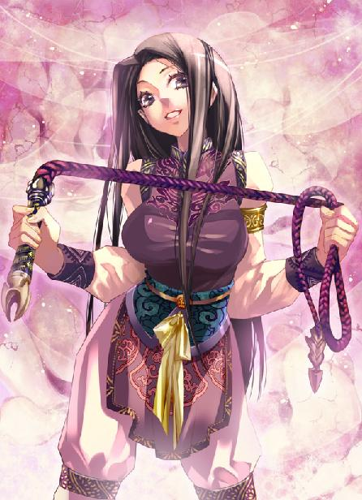
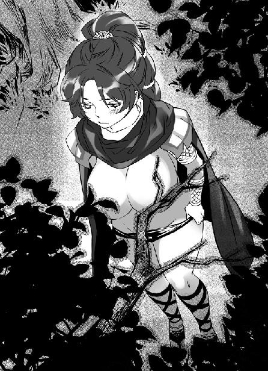
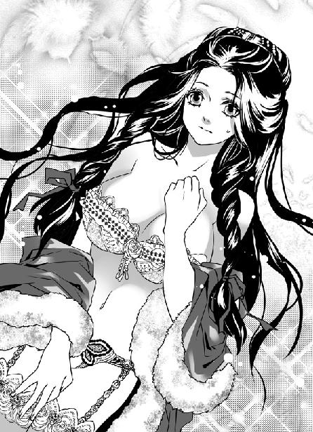

第20集·如梦幻泡
建康篇（8/8）
出版日期：2011-03-18
【本集内容简介】
玉鸡巷热热闹闹地办起婚宴，程宗扬也乐见出生入死的兄弟们有了家室。他舒心地到湖边别墅左拥右抱，岂料碰上云丹琉前来单挑。为了让小紫排解战书，他忍痛把手中的产业及股份交换出去，偏偏死丫头还让美人们挑逗他，死命挖出他仅有的产业，讽他“人为色亡”！
云如瑶在他再次夜探时，镇定地献上冰滑娇嫩的身子，这时他才知晓自己能解她身上寒毒，然而他仍顶着“萧公子”的身份……
原以为日子可以舒心下去，未料巡视产业时被怀恨的苏妲己计杀，甚至还让小魏夫妇赔了性命，连小紫都不能不使尽全力和妖术一拼。遭受暗算的程宗扬和重伤昏厥的小紫落入大江，深深沉底……
※ ※ ※ ※ ※

封面人物：小紫

插图：云丹琉

插图：云如瑶
黑暗中，一个优美的身影静静坐着，她盘着腿，叠放的双足脚心朝天，素白的纤手放在膝上，拇指轻扣中指，食指、无名指、小指张开，状如兰花。微微低着头，乌亮的发丝黑瀑般披在颈后。
良久，她松开中指，双掌摊开，合在一起，掌心相接，慢慢旋转，然后缓缓分开。
像什么都没有发生过一样，素白的掌心没有丝毫变化。她重新收回双手，深吸缓吐，稳住吐纳的气息。凝聚起一丝微弱的气息后，她再次重复刚才的动作。
无论她如何催动，记忆中的一幕都没有出现。但她一遍又一遍做着徒劳无功的努力，始终没有放弃。
不知过了多久，当她再一次分开双掌，终于有一抹微弱的光线从她洁白的掌心透出，淡得几乎看不出来。
她握紧手掌，香肩微微抖动。良久，她站起身，将自己的身体洗浴干净，妆扮一新。
※ ※ ※ ※ ※
建康。雀燕湖。
金枝会馆西侧，一座酷似圆形剧场的楼阁内，深紫罗兰色的天鹅绒帷幕低垂下来，幕上缀着大大小小的水晶，在琉璃灯的映照下，宛如无数星辰。
程宗扬坐在榻上，两边一左一右各坐着一个胖子，一个是石胖子石超，另一个是章胖子章渝。石超抱着那名扮成僧耆洲土豚的女伶，一边调笑一边把手伸到她臀间，拨弄那条短短的豚尾。周围几名雪躯半裸的美婢小心服侍着，穿花蝴蝶般奉上果盘和酒水。
伴着天竺手鼓的欢快节奏，几个女子出现在舞台上。她们身材高挑，五官如雕刻般清晰，鼻梁细窄而又挺直，每个人都生着妩媚的大眼睛，皮肤白晳。其中三个额心点着红痣，盘着发髻，另一个年轻女子点着的痣则是紫黑色，垂着一条乌亮的长辫子。
凸凹有致的身体上各自披着宝蓝、浅绿、鹅黄和桃红的纱丽。她们的纱丽从腰下缠起，向下缠住圆润的臀部，裹住修长的双腿，再向上绕到胸前，一角掖在肩上，中间袒露出一截雪白的腰肢，走动时摇曳生姿。
优美的歌声响起，她们随着鼓点在台上边舞边歌，舞姿优美而妖冶，鲜艳的纱丽飘舞飞扬。歌舞不仅出色，而且充满异国风情，雪白的玉臂和纤足上缀着细小的银铃，不时发出悦耳的轻响。石超抬起身，指着穿蓝色纱丽的天竺女子道：“那个！那个叫什么来着？”
章渝笑呵呵道：“石爷怕是忘了，那个穿红纱点紫痣的，扮的是羯陵伽城主的女儿，旁边两个是城中的贵妇，绿色的那个是侍女。”
“谁问你这个了，我是问后来被吊起来，屁股上打烙印的那个！”
章渝恍然道：“那个啊？她男人是戒日王手下大将，战败被砍了头的。穿宝蓝那个就是她。”
石超拍着凭肘的小几道：“我就喜欢那个！程哥，你最是见多识广的，瞧瞧是不是正宗的天竺歌姬？”
印度舞自己见过，但近距离观看还是头一次。程宗扬笑了两声，“章老板的金枝会馆果然不凡，这样出色的天竺歌姬，不知是从哪里买来的？”
章渝笑得眼睛都眯成一条缝，“还是馆里去五原城采办货物时，碰上一批贩来的天竺奴隶，手下人挑着买了些，找个懂天竺语的问过，才知道天竺大乱，叛军打下东天竺的羯陵伽城，因为没粮食，把城里的女人都卖了换粮。被卖的还是运气好的，卖不掉的都被宰来吃了。”
这事自己曾经听阿姬曼说过，此时听到仍然心惊肉跳。
章渝道：“敝馆买了这些天竺女奴，小的念着单跳舞也没什么意思，倒是听城破的事有趣……”
正说着，一名仆人进来，在章渝耳边低声说了几句。章渝露出一丝苦笑，抱拳道：“本想陪程爷、石爷好生看场戏，可恨俗务缠身，只能失陪了。”
程宗扬笑道：“章老板尽管去忙。”
章渝对旁边的美婢吩咐几句，让她们用心伺候，这才起身告辞。
程宗扬顺势搂过芝娘，让她伏在自己膝上。芝娘雪白的肌肤上用油彩绘着妖艳的斑马纹，这会儿没办法擦洗，只能装成心醉神迷的样子，用衣袖帮她遮住赤裸的身体。芝娘意识到他的好意，依偎得更紧了。
旁边服侍的美婢道：“这几个天竺女奴都是羯陵伽城出来的，因听她们说起城破的事，才编了这出戏。”她抿嘴笑道：“说是戏，其实都是实事呢。”
程宗扬盯着帷幕旁边那个半露的身影，漫不经心地说道：“是吗？”
美婢乖巧地剥开一颗石榴，一粒一粒服侍程宗扬吃着，娇声道：“这一段是刚开始，城主女儿要出嫁，城里的贵妇都来祝贺。”
程宗扬抬了抬下巴，“后面那个是谁？”
美婢笑道：“程爷眼睛好尖，那个是城主夫人，一会儿就上场了。”
鼓声停歇，天竺女子停下舞蹈，退到一旁。接着笛声响起，扮作城主夫人的女奴提着纱丽走上舞台。她挺鼻深目，眸子微微发蓝，眉毛像修过一样整齐而弯长，红褐色的长发盘在头顶，额心印着一点朱砂痣。她看起来四十上下，已经是美人迟暮的年纪，但皮肤白净，仍能看出她年轻时的美貌。她身上披着一条浅紫色的纱丽，纱丽两侧镶着华丽的滚边，显得高贵而优雅。
美婢笑道：“那些女奴说，城主夫人年轻时，可是羯陵伽城的第一美人呢，可惜城破不久就死了。这个女奴便宜得很，买的时候只花了十个银铢。”
程宗扬挪动了一下身体，“这么便宜？”
美婢悄声道：“因为她没舌头，才折价的。”
程宗扬放在芝娘大腿上的手掌微微出汗。
一眼看到，自己就觉得这位城主夫人的身影颇为眼熟。这时程宗扬已经可以断定，她就是自己在五原城见过的那个女奴，阿姬曼的母亲。
当初自己买下阿姬曼，还想买下她的母亲，好让她们母女团聚。结果她刚被一个晋国商人用十个银铢买走，没想到竟然会到了建康的金枝会馆。
程宗扬下意识地抚摸着芝娘的身体，心里却在想，不知道阿姬曼是否回到东天竺那个叫耽摩的小城，找到了她的哥哥？
舞台上的表演仍在继续。见到城主夫人，城主女儿迎上去，笑靥如花地扶住母亲。接着鼓声响起，两人在台上对舞，舞姿曼妙。扮演城主女儿的天竺舞姬时而欢快，时而羞涩，看向母亲的眼神充满爱意，将肢体语言表达得淋漓尽致。
城主夫人的舞姿不及女儿的热烈，却更为娴熟。头、颈、肩、腰、臀、腿、足变换出无数美妙的姿态，尤其是双手的动作，再繁复的舞姿也能轻易展现出来。不仅程宗扬看得目不暇给，连那些天竺舞姬也露出钦佩的眼神。只是她虽然舞得美妙，神情间多少有些不经意的木然，仿佛一具被掏空灵魂的躯体。
两位扮成贵妇的天竺舞姬也加入进来，绕着母女俩翩翩起舞，台上充满喜庆的气氛。
接着侍女捧出一口盒子，城主夫人抬起手，用指尖挑起一点朱砂，扮成女儿的舞姬跪下来，让母亲将自己额心的印记换成红色。
笛声蓦然响起，充满凄厉的意味，鼓声突然变得急切。正在舞蹈的女子同时抬起头，表现出惊恐的模样。程宗扬看得清楚，旁边几个只是在演戏，只有城主夫人身体一颤，眼中露出真实的恐惧。
沉重的鼓声中，一队武士手持长矛踏上舞台。刚才的喜悦气氛一扫而空，顷刻间，台上的天竺女子便被武士团团围住。
那些武士都是会馆的女伶妆扮的，她们美丽的胴体上披着仿制的皮甲，赤裸着手臂和大腿，手里的长矛也是涂着银粉的道具，有的还黏着胡须，这会儿摆出凶巴巴的表情，把天竺女子驱赶到舞台前方。
为首一个身材纤巧的优伶模仿着天竺人的口气道：“伟大的战神塞建陀！羯陵伽城已经被我们攻破！你们现在都是征服者的俘虏！”
穿着绿色纱丽的天竺侍女挺身挡在长矛前，用梵语说了几句。一名优伶武士娇声道：“尊敬的大王，她说这是城主的妻子和女儿，还有来贺的贵妇，都出自羯陵伽城最高贵的家族，祝贺城主出嫁的女儿，请看在湿婆大神的份上，宽恕她们。”
贴着小胡子的优伶首领举起长矛，毫不犹豫地从侍女腋下刺过。侍女扑倒在地，剩下的女子都跪下来，双手合什，举过头顶。
“啪！啪！啪！”耳边传来几声清脆的肉响。
石超抱着扮成土豚的女伶，高兴地拍着她的屁股，“快看快看！程哥，戏到这会儿才好看！”
被刺倒的天竺侍女纱丽松开，一名优伶武士举刀做了几个劈砍动作，表示将她砍死。剩下的女子哭泣起来，接着在优伶武士的威逼下，城主的女儿被带到首领面前。
“羯陵伽城主的女儿，”扮作征服者的优伶娇声道：“你要嫁的男子已经被我们砍下头颅，与你父亲的头颅悬挂在一起。你们居住的宫殿将成为征服者的军营。有着月亮般美貌的女奴啊，我命令你，用你的舞姿取悦我的勇士！”
城主的女儿在刀枪威逼下，开始为征服者起舞。她乌亮的大辫子在身后飞舞，淡红的纱丽旋转着，不时被人用长矛挑起。
看得出这名天竺舞姬已经跳惯了这段，脸上没有多少屈辱的表情，甚至故意摇动乳房、摆动屁股，做出种种挑逗的动作。
首领大声宣布，羯陵伽城主女儿的额心将被征服者点上红痣，代表她失去的贞洁。城主的女儿装出惊恐的样子，向后退去。城主夫人张开手臂，护住自己的女儿。
首领抓住她的手臂，把城主夫人重重推倒在地，然后命令武士给这个不听话的女俘处以鞭刑。优伶武士把城主夫人拖到一边，扯下她上身的纱丽，用竹片抽打她的背脊。
程宗扬目光微微一跳。她背上交错的鞭痕自己在五原城就见过，这时虽然淡了一些，但在雪白的肌肤上仍然触目惊心。比起五原城时，她肉体略显丰腴，当时松弛干瘪的肌肤多了些光泽，看来金枝会馆至少没有苛扣她们的饮食，但眼角的皱纹是再多脂粉也无法掩饰的。
石超拍榻顿足地鼓噪起来。程宗扬收回目光，只见台上扮作城主女儿的舞姬被人拽住纱丽一角，她身子旋转着，纱丽越拽越长，不多时缠在身上的纱丽便被扯落下来，露出一具光溜溜的肉体。
征服者的轰笑声中，扮作首领的优伶解开皮甲，露出腰间一条黑色皮革，皮革上镶着一根雕刻成阳具状的白杨木棒。扮成武士的优伶把赤裸的少女按在台上，分开她的双腿，然后首领俯下身，把假阳具送入少女体内。
台上灯光大亮，她们选择的角度正对着贵客的位置，扮作首领的优伶翘起雪白的屁股，雕刻精美的假阳具直直插在少女柔嫩的蜜穴内，让客人能看清每一丝交媾的细节。
“好！好！”石超大声喊叫。
随着阳具的进入，一抹殷红的液体从少女下体涌出，将木棒染得通红。石超哈哈大笑，程宗扬却吓了一跳：金枝会馆这么下血本，竟然拿处女来表演？
旁边的美婢低笑道：“好叫程爷得知，那是假的。扮作城主女儿的那个，先拿鱼鳔盛了鸡冠血，塞在身子里。这会儿鱼鳔被木棒顶破就流了出来。”
台上的少女扭动屁股，与首领交媾着。她下体丹红流溢，神情凄楚，不时发出吃痛的哀求声，将处女破体的一幕演得维妙维肖。
两名天竺贵妇也被拉出来，她们或是乞求，或是挣扎。那些优伶武士大声喝骂，接着台顶高处抛下两条绳索，她们用绳索将两名天竺贵妇手臂反绑起来，又束起她们的腰肢。
绳索向上升起，两名天竺贵妇被吊得双脚离地，身体弯成弓形，相对哭泣，一边乞求自己的神明庇佑。武士们嘻笑着把她们腰间束紧的纱丽抬到臀间，两名天竺舞姬都有着丰满圆硕的臀部，这时束着腰腿的宝蓝和鹅黄纱丽被扯到屁股上一半的位置，紧紧卡住臀肉，雪腻的臀沟敞露着，露出大半屁股，下面的纱丽一直垂到脚底，似乎随时都会掉下。
石超喜欢的那个宝蓝色纱丽的天竺舞姬屁股雪白，臀侧打着一个紫黑色的烙印。
一名优伶武士扒开她紧凑的臀肉，朝里面啐了一口。另一名武士举起长矛，用打磨光滑的矛尾捅进她臀肉里。那名扮作贵妇的舞姬扭动屁股，宝蓝色的纱丽在腿上摇晃，用梵语发出尖亢的叫声。
优伶武士大声宣布道：“她在说，塞建陀的征服者已经用武器征服了她的肉体，她愿意用六十四种不同的姿势与伟大的征服者交媾，直到她丰满的屁股在交媾中被干得红肿，阴道里盛满征服者的精液！”
两名贵妇的纱丽被扯到脚下，赤裸着雪白的乳房和臀腿吊在半空。武士搬来木笼，然后解开皮甲，露出和首领一模一样的假阳具，站上木笼，一个从后面干进贵妇的屁股，另一个从前面干进她的嘴巴。
石超已经按捺不住，解开衣服与那个女伶大战起来。
少女和首领的交媾仍在继续，下体已经被血迹染得殷红。终于，扮成首领的优伶拔出阳具，一名武士抓住少女的辫子，迫使她抬起脸。首领扶起滴着鸡冠血的假阳具，在她额心留下一个鲜红的印记。娇笑声四起，扮成武士的优伶们发出欢呼。刚才强暴时的急切鼓声也变成了柔媚的笛音。
一双湿润的唇瓣触到下体，带来酥软的快感。程宗扬发现自己目睹台上淫艳的一幕时，已经在不知不觉间变得亢奋。
伏在自己膝上的芝娘看了他一眼，不好意思地扯起他的衣袖遮住面孔，一手扶起他的阳具，用唇瓣轻柔地含住，小心地吞吐起来。
服侍的美婢脸色也微显酡红，轻笑道：“听那些女奴说，羯陵伽城破后，城主的女儿被带到军营，叛军让她光着身子跳舞，不听话就用棍子打她，最后还逼她跟破城的勇士们轮流交媾，在宴会上取乐。”
石超身体肥胖，用一般体位交合不但费力，而且有肚子上的赘肉碍事，顶多只能插进一半，难以尽兴。这会儿索性张开腿半仰在榻上，让那个扮演土豚的女伶跪在榻前凹处，朝后撅着屁股，用蜜穴套弄他的阳具，这样只是两人性器相接，既轻省又快活，还能尽兴。
他抹了把汗水，堆起满脸笑容，气喘吁吁地朝程宗扬说道：“程哥，你看有趣吧！听说那个什么什么城一破，城里的女人不分贵贱都被这些蛮贼逮到军营里。那个什么城是什么都城，说起来有东天竺的贵妃、娘娘，被叛军逮住，全都光着屁股吊起来，不管是当官的还是当兵的，想怎么干就怎么干。嘿嘿，那些蛮贼倒会寻快活。也亏得章老板有心思，弄来这班天竺女奴……”
程宗扬正要开口，忽然眼角一跳。
城主夫人受过鞭刑，纱丽滑到腰间，赤着上身被带到台上。饶是那些优伶只是做做样子，背上也多了几道红痕。
扮作叛军首领的优伶娇声道：“这个卑贱的女奴自认为身份高贵，可以违背主人的意志。以神圣的塞建陀之名，我宣布取消她的婆罗门种姓！从今往后，她属于不可碰触的贱民！在她的屁股上打下低贱的烙印，然后给她戴上狗链！”
优伶武士嘻笑着剥光城主夫人的纱丽，用道具烙铁在她臀上盖了一个鲜红的印记，又把一条狗链戴在她颈中。旁边的武士用长矛戳弄着她的肉体，在台上扮出各种羞辱举动。
美婢用询问的口气道：“石爷？”
石起兴奋地挺动阳具，喘着气叫道：“还问什么？当然是全本的！”
美婢目光流转，笑吟吟看了程宗扬一眼，“只要两位爷不忌讳就好。”
芝娘滑腻的香舌在阳具上灵巧地转动，传来阵阵快感，程宗扬忍着身体的冲动问道：“这里还有什么忌讳？”
美婢笑道：“这戏是依着实情编的。那位城主夫人本来是最高等的婆罗门，被剥夺种姓就成了贱民。在天竺，贱民天生就是不洁、有罪的下等人，说来也算不得人，只能算人形的牲畜。就是种地的农夫也不肯跟肮脏的贱民接触。”
“是吗？”
美婢笑道：“她们是这样说的，我也不知道真假。这位城里第一美人儿成了贱民就碰不得了。听说叛军把她当牲畜装在笼子里，到宴会时把她牵出来取乐。因为是贱民，怎么折腾也没人管的。”
程宗扬辛苦地呼了口气，“不能碰还有什么可乐的？”
美婢抿嘴一笑，纤指翅起，指向帷幕。
※ ※ ※ ※ ※
天鹅绒的帷幕晃动了一下，从里面钻出一条黑色大狗。它体型庞大，两耳直竖，拖着一条长长的尾巴，浑身的皮毛像涂过油一样光滑。那黑犬“汪、汪”叫了两声，奔到台上，绕着城主夫人赤裸的肉体转了一圈，然后勾下头，把尖尖的口鼻顶进她臀间。
程宗扬手掌一紧，干笑道：“这要咬伤就麻烦了。”
石超大笑起来，从指上摘下一只戒指扔到台上，叫道：“演得好！能让程哥都看走眼！赏你的！”
那条黑犬往地上一滚，人立起来，接着摘下头套，却是一个披着狗皮的俊俏优伶。她捡起戒指，然后俯下身四脚着地地摇了摇尾巴，娇滴滴道：“多谢石大爷赏。”然后又“汪、汪”叫了两声。
一名优伶武士拉起狗链，把赤裸的城主夫人牵到舞台中央。那名女奴闭上眼睛，顺从地朝台下抬起臀部。两名武士举起长矛，从后面插到她大腿中间，往两边一分，迫使她白滑的大屁股高高翘起。
扮作黑犬的优伶扑上去骑到她臀上，后腿张开，露出胯下一条长锥状的狗阳，在她臀间无目标地撞来撞去。
黏着胡子的美女优伶夸张地大笑，然后用长矛挑起犬根，把顶端放到女奴张开的穴口。
得了赏赐的优伶表演起来分外卖力，她故意在天竺女奴穴口撞了几下，然后才耸身而入，在她体内挺弄起来。
刚表演过破体的天竺舞姬赤裸着身体，没有擦去下身的血迹，就那样在武士面前淫艳地舞动起来。两名并肩吊在一起的女子被武士从后面奸淫了一遍，然后旋转过来面对台下客人。
她们一边承受臀后的撞击，摇晃着沉甸甸丰挺圆硕的双乳，一边扬起玉脸朝台下客人时而尖叫、时而喘息，还不时露出挑逗的媚笑。那些美貌的优伶半是舞蹈半是表演地挺动玉体，与赤裸的天竺舞姬肌肤相接，乳摇臀颤，风骚入骨，在台上勾画出肉欲横流的群交一幕。
“啵”的一声，芝娘小嘴松开。程宗扬猛地站起身，抱着芝娘两步跨到舞台上，把黑犬优伶推到一边，扯起那个与阿姬曼一样有着红褐色头发的女子。
迟暮的美妇木然看了他一眼，脸上没有一丝表情。周围的优伶投来惊愕的目光，程宗扬压下心头的战栗，怪笑道：“好一个标致的天竺美人儿，我买了！”
石超浑身一抖，在土豚女体内无法控制地喷射起来，半晌才喘息道：“我说程哥，你怎么看中那个了？”
美婢也有些发怔，“奴婢不敢瞒程爷，她没舌头的，年纪也不轻了。程爷若想要个天竺奴在身边伺候，馆里尽有年轻貌美的。”
程宗扬霸道地说道：“我就喜欢成熟的，这年纪正好！”
台上优伶都停住动作，小心退到一边。那几个天竺舞姬不知道发生了什么事，茫然看着同伴。
程宗扬把芝娘放到一边，先系好裤子，然后解下上衣披到那女子身上，“这两个我都要，卖身钱多少，让你们章老板开个价！”
他不愿让人看出底细，干笑两声掩饰道：“哈哈，石胖子，你选的金枝会馆真不错，我这么不近女色的人，一次就看中两个！缘份啊。”
红发美妇神情木然，那件衣服披在肩上也不去扯，裸露出两团略显松弛的雪白乳峰，对程宗扬看也不看一眼，似乎听不懂他的语言，又似乎对身边的一切漠不关心。
程宗扬装出急不可耐的好色样，一手一个抱起两女便走。
石胖子匆忙抢过侍女拿来的湿巾，一边擦着下身的污物，一边提着裤子赶过去，叫道：“程哥！程哥！等等我啊。”
那美婢也慌忙跟过去，迈着碎步走在程宗扬旁边，小声道：“程爷……”
程宗扬板起脸道：“怎么？以为我掏不起钱吗？”
美婢赔笑道：“奴婢不敢。章爷吩咐过，程爷喜欢的便尽管带走，馆里一个铜铢也不肯收的。”
石超连忙道：“不关我的事！我没给过钱！”
“谁问你了？”程宗扬没好气地说道：“既然章老板不肯收钱，正好我在建康还有处空宅子，就换她们两个吧。”
美婢道：“奴婢不敢。”
程宗扬横眉瞪眼道：“我那处宅子换这种货色一百个也够了！程爷吐出的唾沫砸下的钉，还怕我说话不算话？”
美婢不敢再拦，细声道：“程爷先带人走，回来我再禀告章爷。”说着她讨好地压低声音，娇声道：“程爷真好眼光。来馆里的客人都嫌这女子少了舌头，没人肯嫖。其实姐妹们私下说，若论起好处，这个天竺奴只怕比馆里当红的姐儿还强些呢。”
程宗扬怔了一下，“什么好处？”
美婢神秘地一笑，“程爷试试就知道了。”
试试？自己还真没想过。就是冲着阿姬曼，自己也不能试啊！
芝娘伏在他怀中，神情又惊又喜，在他耳边悄声道：“多谢程爷……”
程宗扬叹了口气，“别谢了，我还头痛呢。小狐狸不在建康，你遇了事，我不管也说不过去。大家先回去再说吧。”
石超纳闷地看了芝娘一眼，被程宗扬眼一瞪，连忙缩回头去。
程宗扬心头其实颇为忐忑，自己出来一趟，又带了两个女人回去，让那死丫头见着还不知怎么样呢。
章渝这边倒不担心，自己开的价钱不算低了，那宅子是苏妲己的，现在人去楼空，一直没有处理，房契还在自己手中。以那处宅子的价值，买十个绝色也绰绰有余，章渝一点也不吃亏。而且这两个女人对自己有用，对章渝半点用处也没有，再留着只怕要在会馆养老，他能碰上自己这个冤大头买主，已经是烧高香了。
※ ※ ※ ※ ※
祁远张大嘴巴，看着那个砸在自己手里快两年，好不容易才卖出去又莫名其妙被这位爷买回来的女奴。
程宗扬道：“傻站着干嘛？你不是会天竺话吗？问问她怎么到这儿的？”
祁远苦笑道：“程头儿，能问我早就问了。她是个哑巴……”
程宗扬拍了一下脑袋，无奈地说道：“那你告诉她，不用担心，在这儿没人欺负她，等找到阿姬曼就让她们母女团聚。”
祁远小声道：“程头儿，那天竺丫头真是你送走的？”
程宗扬叹道：“我那时候自身难保，只给她留了点钱，也不知道她是不是回东天竺了。”
祁远啧啧两声，钦佩地看了他一眼，“程头儿，你可真舍得……”
“少废话！赶紧说！她要是听不懂，你以后少给我吹牛，说什么走遍大江南北，不管是人是鬼都能搭上话！”
祁远擦擦嘴，翻着眼睛想了想，然后“咿咿呀呀”地说着天竺语。
那女子披着一袭软袍，眼睛看着地面，似乎没有听到。
但当祁远嘴里蹦出来“阿姬曼”这个词，她突然抬起头，眼中露出一丝光亮。
程宗扬松了口气，朝祁远竖了竖大拇指。
从金枝会馆出来，石超不敢问，程宗扬也不解释，只催他赶快回去。马车直接驶进宅里，程宗扬让人拿来衣物，才带着两女下车进院。
宅子前面两进已经住满人，程宗扬让人在第三进收拾了两间。好在宅中正筹办婚事，被褥、物品都是现成的，直接搬来便可入住。安顿下来后，他让人叫来祁远，向这个酷似阿姬曼的女子解释清楚。可惜她口不能言，想打听阿姬曼的事就没辙了。
良久，她似乎听懂了一些，淡淡看了程宗扬一眼，然后重新垂下眼睛，恢复了木然的神情。
单看她身上的伤痕，便知道她所受的伤害有多深。程宗扬在心里叹了一声，堆起笑容道：“你好生在这里休养些日子，不用怕。老四，你叫……雁儿吧，让雁儿过来帮忙照顾她。”
“哎。”祁远答应一声。
程宗扬帮她沏了杯茶，说道：“你虽然听不懂，但没关系。我和阿姬曼是好朋友。她走的时候说要去耽摩找哥哥，等她找到，也许还会回来。你不用多想，在这里好好歇着。到时候阿姬曼看到你身体健康，心里也会高兴。”
不多时，雁儿进来，程宗扬才起身离开。那杯茶她一点都没动。从她显露的气质猜测，她以前的身份不会比她所扮演的城主夫人低多少，只不过这会儿她虽然坐在那里，整个人却像被掏去灵魂一样空洞。
带着一肚子的叹息，程宗扬来到隔壁房间。芝娘刚梳过头，见他进来便屈膝欲跪。程宗扬拦住她，“得了吧，咱们这儿不来这一套。你想给我面子就笑一个好了。真笑不出来也不用麻烦了。”
芝娘嫣然笑道：“能遇上公子，是芝娘三生修来的福分。”
程宗扬坐在椅上，“什么福分啊？左右是混日子吧。那会儿没说清楚，你们怎么会撞上贼了呢？”
芝娘苦涩地说道：“总是流年不利，命里注定有此一劫。那日三个客人到画舫饮酒，叫来几个姐妹相陪。谁知他们到了湖中，突然间变了脸色……”
芝娘声音有些发颤，“有个贼人拔出刀，举手便把一个姐妹砍了，然后把舫上值钱的东西全都抢走，又把我们捆了，关进舱房，放火烧了画舫。还好奴家命大，绳子捆得不紧才挣脱出来。后来官府查案，舫主找到奴家索赔，奴家还不起钱，只好自卖自身，入了章老板的会馆。”
“你说官府查案，是不是有个女捕头？”
“有的。听说是长安来的，那些差官对她很恭敬呢。”
程宗扬道：“你画舫生意不错啊。刚从南海贩回来的珍珠，你们便有了。”
芝娘愕然道：“哪里有南海的珍珠？”
“被杀的那个，是不是一个名妓？”
芝娘点了点头，“彩姐一直是秦淮河的红牌。”
“她被杀时，身上是不是戴有珍珠？”
芝娘道：“哪里有珠子？几只手镯都被那些贼人抢走了。”
程宗扬有些莫名其妙，“这些天是不是还有别的名妓被杀？”
芝娘摇了摇头，“秦淮河是建康的销金窟，若是常有凶案，哪里还有客人会来？”
程宗扬愣了一会儿。那天泉玉姬突然来到云家，说的是为查案来问线索，可芝娘说明明没有珍珠，她还来问什么？
忽然身上一软，一具温热的肉体坐到怀中。芝娘拥着他的脖颈柔声说道：“奴家进了会馆，要从最低的优伶做起，原以为此生都没有出头的日子，谁知会遇上公子这样好心肠的客人……”
她衣领松开，露出绘着斑纹的雪滑胴体，两团雪乳离自己的鼻尖近在毫厘，在眼前颤巍巍耸翘着，充满了挑逗意味。
程宗扬咽了口唾沫，“芝娘，我赎你出来倒不是为了这个……”
芝娘笑道：“奴家知道主子是好心人。不过奴是欢场中人，又不是什么贞节女子，只有服侍主子高兴，便是奴家的心意了。”
芝娘一边说，一边除去衣物，两手扶着椅子，丰满的圆臀微翘，隔着衣物在他阳具上旋转摩擦。
程宗扬兴奋起来，抱起她丢到榻上，重重地压在她艳致的胴体上。
“啊呀……主子的阳物好热……唔……顶到奴的花心了……”
娇吟声中，程宗扬奋力在芝娘体内挺动。芝娘一边迎合他的进出，一边媚叫不绝。她久经欢场，性技巧只怕比起碧姬也不逊色，这时使出浑身解数，让主子尽情享受自己的肉体。
芝娘先分开双腿，把枕头垫在臀下，露出蜜穴让他肏弄，然后翻过身，跨在他腰间，主动摇臀摆乳地套弄，接着俯下身，翘着母马一样的屁股，让他从后面猛干。
芝娘一边殷勤承欢，一边用娇滴滴的声音说着淫词浪语，“主子好坏……刚拔出的尾巴又让人家插回去……”
“谁让你这么骚呢！”
“主子再搞，人家屁眼儿都要被主子搞大了……哎呀……塞到里面了……”
“好漂亮的母斑马！”
“馆里专有几个身材高大的姐妹扮成母马，装了鞍子让客人骑呢……”
“太淫荡了！呼呼！罚你下次做给我看！”
※ ※ ※ ※ ※
喜事总是来得快，眨眼间便到了九月初六，一大早众人便收拾得整整齐齐，在门口等候。用程宗扬的话说，连祁老四都打扮得人模狗样，一张青黄苦瓜脸笑出花来，手捧红绳串着一百枚铜铢的小串钱，逢人就发。
充当司仪的秦桧打扮得玉树临风，三绺长须梳理得一丝不乱，见人就带出七分笑意，抱拳拱手打躬作揖，礼数周全，让来贺的宾客如沐春风。
吴三桂和易彪带着手下的兄弟前后照应。程宅的女眷也跟别家不同，没有不出内院的规矩，兰姑、芝娘两个做惯场面事的打头，领着雁儿、鹂儿、丹儿、眉儿……进进出出。几个俏婢固然年轻貌美，兰姑和芝娘也不遑多让，花枝招展间流露出无尽风情，让客人几乎看花了眼。
头一个赶到的贺客竟然是石超。程宗扬一阵纳闷，“你一个娘家人，接亲的还在路上呢，你怎么就跑这儿来了？”
石超道：“程哥这儿不是热闹嘛。张侯爷、桓老三他们都要来，我先来占个席。程哥放心，那边有谷安在，保证错不了！”
程宗扬玩笑道：“你可小心，万一老吴他们接错了，把贵府的姬妾接两个过来，那你可亏大了。”
石超无所谓地说道：“只要程哥能看上，随便！”
“石胖子，你还真大方啊。”
“兄弟如手足，妻子如衣服嘛。对了程哥，”石超挤挤眼，小声道：“那天你挑的两个美人儿怎么样？合用不？”
程宗扬笑了两声，“此间妙处，难与君说。得了，你既然来了也别闲着，帮我在里面招呼客人。喂，你刚才说张侯爷和桓老三要来是什么意思？”
石超竖起拇指，“程哥面子真大！昨天我见着张侯爷，说起程哥宅里喜事迎门，张侯爷当时就恼了，说这等喜事也不言语一声，哪儿还有半点兄弟情分。我赶紧解释，不是程哥自己办事，是两个兄弟娶我们石家两个姑娘。张侯爷说，那也不行，只要哥哥宅上的喜事，就不能落下他们几个。哪怕今天下刀子，他们也一定得来。”
程宗扬偏着脸想了一会儿，“这不是给我添乱吗？”
今天的喜事自己本想自家兄弟热闹一下，张少煌、桓歆这帮纨绔子弟出身显赫，他们要来，又是讲究身份，又是讲究家世，还要讲究席次、排场，想想有够头痛的。
石超道：“我也说了，只是程哥的兄弟成亲，不想闹太大，可张侯爷迎面就啐了我一脸……”
“张少煌这是什么狗屎脾气？”
石超讪讪道：“张侯爷说，萧哥儿不言声去了江州，他心里正窝火呢。这才几日，程哥又跟他生分起来，他说石胖子你再啰嗦，先打一顿解解恨。我……我也不敢再吭声了。”
程宗扬无奈地说道：“算了，他要来就来吧。先跟他说啊，我这儿没有他们世家爷们的专席，要坐大家一块儿坐。他要摆架子，那还是别来了。”
石超连连点头，“晓得晓得！”
吴战威和小魏娶的是正妻，双方依足成亲的礼数，石家先把翠烟和莺儿接回去，吴战威和小魏带着车马赶往金谷园接亲。如果直接拜堂，两女就成了没娘家的人，免不了要让街坊非议。但这样一来路上时辰就费得多了，差不多要到午时才能回来。
不过宅里一点都没闲着，吴战威和小魏跨马离开，请来的乐班就开始敲锣打鼓，整条玉鸡巷车水马龙，人头涌动。先是几家作坊派人送来贺礼，接着云家由云苍峰亲自出面，送来两车的贺礼。
程宗扬笑着迎出来，“云老哥真给小弟面子，竟然亲自来了。”
云苍峰哂道：“什么是你的面子？我和吴兄弟、魏兄弟在南荒也是过命的交情，这样的喜事难道还不亲自走一趟？”
“那是那是！”程宗扬看着那些礼物，顺手拿起一件，讶道：“这是什么东西？”
云苍峰笑道：“工匠费了两个月，好不容易才制成这两件，送给两位兄弟防身。看出来了吗？是当日那龙的鳞甲！”
程宗扬试了试份量，这龙鳞盾有尺许大小，份量比金属盾轻了一半，强度却犹有过之，笑道：“他们两个得了这东西，只怕大伙都要眼红。”
“不妨。刚开始工匠们没有做过，不知道如何下手，现在做成两件，往后便容易了。”云苍峰笑道：“留在南荒的龙鳞尽多，只要花些工夫，就是装备上万人的军队也够了。”
程宗扬转念一想，“云老哥，你不会是准备做军火生意吧？”
云苍峰抚掌大笑道：“有何不可？那龙周身是宝，单是鳞甲就能大赚一笔。老哥的股份虽然只有半成，但看来所得不菲！”
程宗扬笑道：“有钱大家赚嘛，云老哥，你里面坐，我去前面瞧瞧。”
临近午时，宅里愈发热闹，乐手鼓足力气吹拉弹唱，谷安请来的百戏班也开始登台表演，吸引了大批宾客，整条巷子都热闹非凡。
程宗扬费力地挤过人群，嘟囔道：“玉鸡巷的街坊有这么多人吗？”
秦桧神采飞扬，在一旁笑道：“一大半都是打秋风的，喜事难得，也不计较这么多了。未记名的只限于前院，里面才是正经宾客。”
程宗扬挤不出去，索性也不挤了，回到内院，果然少了许多咶噪。兰姑和芝娘也不避嫌，花蝴蝶般在庭间忙碌，甜言蜜语乐得石超合不拢嘴。
程宗扬一抬眼，看到盛银织坊那位白头发的黄婆婆。刚想躲避，黄媪迎过来，皱眉道：“老身想了几日，总是想不明白，为何这丝能织得首尾如一，毫无断痕？”
亲娘哎……程宗扬苦笑道：“要不怎么是天衣呢？”
黄媪固执地说道：“便是天衣也是天上织女织的吧？她如何能把丝线两端织成一处？”
程宗扬两手一摊，“那得问织女姐姐了。”
黄媪还要再说，程宗扬连忙拦住，“我说婆婆，你总想着这个可不是个事儿啊。你老人家如果有兴趣，不如我再说几样衣服款式，你替我做出来。”
黄媪眼睛一亮，“你还见过其他天衣？”
“可不是嘛。丝的、麻的、毛的、皮的、革的……都有！”程宗扬诱惑道：“比如有种皮制的贴身衣物，周身没有一个纽扣，紧贴着身子，就跟长在上面一样。婆婆想想，怎么才能做出来？”
程宗扬抛出一个难题，趁黄媪苦苦思索时赶紧开溜。
招待客人都在前面两进，到了第三进，程宗扬终于能松口气。他拉开领子，用衣袖扇着风，一面念叨着是不是该弄把小狐狸常用的折扇来。
程宗扬衣袖停下，瞪眼看着小紫从厢房出来，“死丫头，你在干嘛？”
小紫抱着雪雪，笑吟吟道：“人家只是来说说话啊。”
那只小贱狗神态萎靡，见到自己也不摇尾巴，看来被死丫头祸害得不轻。程宗扬冷笑一声，“骗鬼啊！你跟哑巴聊天？”
“那又怎么了？”
程宗扬朝厢房看了一眼，压低声音道：“死丫头，你别乱猜，那是我一个朋友的亲戚，我接来住一段，你可别去欺负她。”
小紫眨了眨眼，“谁啊？”
“少装傻！就是房里那个。”
“哦，”小紫恍然道：“你说拉芝修黎。”
程宗扬一怔，“谁？”
“拉芝修黎，那个东天竺的漂亮哑巴啊。”
看着一脸天真的小紫，程宗扬从脚底升起一股寒意，低吼道：“死丫头，你搞什么鬼？你怎么知道她的名字？”
小紫神情自若地说道：“她告诉我的啊。”
程宗扬叫道：“一个哑巴会跟你说话？跟我说明白！你是不是在她身上弄什么妖术了？妈的！我早该想到，那死太监搞的是什么阴魂！肯定让你拿活人来当试验品！我干！你要害死她，我跟你没完！”
小紫抱着雪雪就走，一边撇了撇红菱般的小嘴，“大笨瓜！”
程宗扬抱住肩膀，挡在小紫面前，“哑巴会说话？”
小紫翻了翻眼睛，“笨死你了。她是哑巴，又不是不会写字。”
程宗扬像当头挨了一棒，“写字？”
小紫拿出一张纸，“她写的，你自己看吧。”说完抱起雪雪，聘聘袅袅地离开。
程宗扬拍了拍脑袋，写字？自己怎么没想到呢？还对小紫发那么大的火……死丫头虽然很欠扁，但也不能乱骂啊。
摊开那张纸，程宗扬脸色顿时黑下来。
纸上一连串波浪般的字迹，流畅美观，问题是……自己一个字都不认识，这东天竺的文字，该是……
程宗扬叫道：“骗鬼啊！死丫头，你一个文盲，还会梵文！”
小紫远远扭过头，朝他扮了个鬼脸。
※ ※ ※ ※ ※
看到程宗扬脸色阴晴不定地出来，秦桧一面笑着与客人寒暄，一面不动声色地问道：“公子，出了什么事吗？”
“没事。”程宗扬露出做梦一样的表情，“会之，你会梵文吗？”
“梵文？”秦桧想了一下，“那东西我没练过。”
“如果有人从没学过就能看懂梵文，你信吗？”
秦桧思索片刻，点了点头，“我信。”
程宗扬讶道：“这你也信？”
秦桧正容道：“佛家有五通之谓，天眼通、天耳通、他心通、宿命通、身如意通，有此五通便可超越肉身之障，见人所未见，闻人所未闻，洞悉他人心念，知晓前生后世，变火成水，飞行自在……”
“佛家啊。”程宗扬露出梦幻般的笑容，“你觉得小紫像是学过佛的吗？”
秦桧干咳道：“怕是没有……”
程宗扬拍了拍他的肩，“不用怕。她这辈子要是念过一声佛，我就直接把自己阉了，连麻药都不用！”
秦桧小心道：“究竟是怎么回事？小紫姑娘有什么不妥吗？”
程宗扬叹了口气，无力地摆摆手。
刚才自己走进房内，那名天竺女子正坐在榻上，双手合什，低首垂目默默入定，对自己理都不理。
程宗扬问了几句，都没有任何反应，最后试着叫了一声：“拉芝修黎？”
那女子霍然抬头，目光中露出讶色。
程宗扬试着又说了几句，她就一个字都听不懂了，最后垂下头，神情木然地闭上眼睛。自己鸡同鸭讲地说了半天，连倭语都蹦了出来也没得到半点反应，只好灰头土脸地出来。
程宗扬一肚子纳闷，闹不清小紫是怎么和她交流的。幸运的是她身体状况看起来还好，大概死丫头没有下什么毒手。
程宗扬打起精神，“来了多少客人？”
“作坊来了七人，加上石少主、云三爷，这是内院的。听说还有客人，我让人摆了十几张座席，大概能坐三十来人。外院加上巷子里的，这会儿差不多有三四百人，”秦桧应答如流地说道：“等接亲的马车一到就开流水席。对了，刚才金钱豹的章老板也派人送了贺礼，还捎来两份身契。”
“八爪章鱼够给面子啊。”程宗扬想起一事，“这么喜庆的事，怎么不弄几串鞭炮放放呢？”
“鞭炮？”秦桧想了一下，“那东西宋国才有卖的。公子若早些说，在下让人去采购一些来，现在是来不及了。”
正说着，门外一阵喧闹，张少煌、桓歆、谢无奕、袁璟、阮家兄弟……一行十余人带着几十名恶仆，人如虎马如龙地驶进玉鸡巷。
张少煌跳下马，高声叫道：“程兄！这等喜事都不叫我们兄弟，太不给面子了吧？”
程宗扬笑道：“岂敢！岂敢！张侯爷快请！桓老三，你这马不错啊！哪儿来的？”
桓歆大笑道：“打谢爷手里赢的！”
谢无奕一笑，嘴巴咧开，竟缺了两颗门牙。
程宗扬禁不住哈哈大笑，“谢兄，怎么回事？不小心从马上栽下来了？”
桓歆揶揄道：“谢爷干的光彩事！这回可露脸了！一会儿让他跟你说！”
程宗扬把众人让进内院，云苍峰、石超闻声都出来迎接。那几个作坊来贺的客人慌忙要回避，被程宗扬拦住，似笑非笑地对张少煌等人道：“里面都是我请的客人，各位爷不介意同席吧？”
张少煌大咧咧道：“这有什么？云三爷，有些日子没见了，今天可要好好跟你喝一杯！”
桓歆拽着谢无奕，“王家没来，你们谢家坐首席，够面子吧？”
建康士族对门第极为上心，若有寒门同席，那些世家多半拂袖而去，何况还有作坊的工匠。不过这些世家子弟虽然纨绔，但别有一番好处，对这些礼法不放在心上。
谢无奕浑不在意地说道：“云三爷年长，自然该上座，我们兄弟在下面作陪吧。”他缺了两颗门牙，说话漏风，语气却没半点作伪。
这边兰姑过来，半边身子挨住谢无奕，娇声道：“久闻谢爷豪饮，今日让奴家伺候，如何？”
被这个打扮俏丽的熟艳妇人双乳一挤，谢无奕身子顿时软了半边，顺势往席间一坐，拉住兰姑的手道：“听说程兄这里有上好的烈酒，今日我可要一醉方休。不知道美人儿能不能陪住？”
兰姑笑盈盈斟了杯酒，举首饮尽，然后亮出杯底，脸不红气不喘地娇声道：“谢爷请。”
谢无奕大喜，拿起酒盏道：“满上！满上！”
午时一刻，车马进入玉鸡巷，乐声大作。吴战威胸口佩着红花，跨着一匹高头大马，当先来到门前。众人都欢叫起来，吴战威跳下马团团抱拳，向宾客致谢，一回头，吴三桂递来一张弓。
吴战威一愣，“这是干嘛？”
旁边的易彪笑了起来，“吴哥忘了吧？这是接新娘进门的规矩。”
吴三桂恨铁不成钢地说道：“兄弟我昨天给你说过八遍！”
吴战威一拍额头，“忘了！忘了！”
吴三桂揶揄道：“只要别忘了把人接回来就成。”
“瞧你说的！”吴战威讪讪接过弓，这边小魏也拿过一张。
两辆马车并肩停在门前，上面披红挂彩，正是新娘的车轿。两人搭上朱红色的箭，一箭射天，一箭射地，最后一箭朝向车帘，这才由喜娘掀开车帘，将披着大红盖头的新娘扶下车。
接着喜娘捧出两只火盆放在门前。新人先跨过火盆，去了路上的邪气，然后跨过两张马鞍，意谓阖家平安，才进入大门。
因为是娶正妻，宅子正门大开，两位新人并肩一同进门。这边喜娘接过两位新人，祁远等人用大筐盛满崭新的铜铢，大把大把洒出来，引得巷中人人争抢。
到了堂上，众人欢笑声中，吴战威和小魏各拿一根红布包的秤杆，挑开新娘的红盖头，意谓称心如意。
盖头掀起，两张如花似玉的面孔露了出来，翠烟和莺儿含羞带喜的美态引得众人啧啧赞叹。院中的戏台上，百戏班也及时上演贺喜的一幕，两名走绳索的艺人垂下手中的喜联，引起一片喝彩声。
因为新郎新娘都没有亲人，敬拜高堂一节就免了。秦桧立在披红挂彩的大厅中，高声道：“一拜天地……”
四位新人并肩跪下，拜过天地，整个玉鸡巷欢声雷动，气氛热烈。
程宗扬根本没能挤过去，只好远远站在一旁。吴战威和小魏一路跟着自己出生入死，能有今日这一幕，自己打心底替他们高兴。
这些天程宗扬看了不少市面印制的书籍，从种种蛛丝马迹中推测，穿越到这个时空的不止自己一个。但无论是数百年前的赵鹿侯，还是离世不久的岳帅，不管他们如何深智远谋、权重势大，历史总有其惯性。那些杰出人物每次试图改变历史的举动，最多只是让历史的车轮微微一顿。他们曾经的努力犹如昙花一现，随即迷失在历史的风烟中。
比起那些雄心勃勃的穿越者，自己没有什么野心。程宗扬想，只要能给身边人带来一些欢乐，就是自己所能做出最真实的成就了。
忽然颈后一热，一个毛绒绒的小东西舔了自己一口。程宗扬气恼地回过头，“死丫头！小心我哪天把你的小贱狗大卸八块！”
雪雪翻了个白眼，扭头趴到小紫肩上。小紫看着堂上两位新人，笑吟吟道：“程头儿，你心里是不是酸溜溜的？这两个美人儿还没上手就被别人娶走了。”
“上你妹啊！你安分点儿，今天大喜的日子，别给我惹事。”
“讨厌。”
程宗扬咬牙切齿地小声说：“死丫头，有件事我还没问你呢！上次是不是你把《金瓶梅》塞到我包里了？”
小紫眨了眨眼，“人家才不知道什么是金瓶梅呢。”
“少给我装！差点儿就被你害……”程宗扬突然住了口。
小紫笑吟吟道：“怎么了？程头儿？”
这么丢脸的事还是别说了。紧接着堂上一声“夫妻对拜”给程宗扬解了围。吴战威和柳翠烟，小魏和莺儿，两两对拜，喜庆的气氛达到高潮。
小紫望着堂上，唇角好看地挑起，似乎也感染了新人的喜悦。
程宗扬小声道：“喂，丫头，是不是心动了？只要你找个人嫁了，我保证八抬大轿把你送出去，一个铜铢的彩礼都不收，还狠狠倒贴他一笔钱。”
“好啊。我看上姓萧的傻瓜了，你把我嫁了吧。”
程宗扬酸溜溜道：“我就知道你对他有意思！”
小紫吐了吐舌头，扭头看着堂上的新人。
堂上已经夫妻对拜完毕，喜娘簇拥着新人来到洞房。百戏班随即在台上演出鼓舞，七只皮鼓在台上摆成北斗七星的形状，两个舞姬在鼓上盘旋起舞。她们穿着晋国的舞服，细腰高领，长裾彩袖，臂间绕着长带，在鼓上进退自如，飘忽如神，吸引了无数宾客的目光。
程宗扬回到席间，众人已经开始欢饮。张少煌、桓歆等人都是好饮之徒，根本不需要主人制造气氛，堂上便飞觥错盏，吆五喝六，一片欢腾。
程宗扬也不客气，在云苍峰旁边坐下，笑道：“幸亏今日大小姐没来。”
云苍峰拂着胡须呵呵笑道：“小哥若是想饮，我派人叫那丫头来。”
程宗扬连忙拦住，“免了！”说着他埋怨道：“我说云老哥，你们家那位大小姐也太能喝了，当场就要我难看。”
“年轻人嘛，好胜心强也是难免。”云苍峰道：“丹琉性子直爽，一点小小误会，化解便无妨了。你说是吧？”
误会？程宗扬心里嘀咕：若不是我躲得快，第一次见面就让她砍了。不就是吹个口哨吗？直接给我判死刑……
张少煌持觞过来，“程兄，萧哥儿不言语一声就一个人去了江州，还当我们是兄弟吗？萧哥儿在建康跟你最交好，这杯酒你要替他喝了！”
程宗扬有些心虚地接过酒觞。这些天自己没少跟他姐姐厮混，每次到宫中，他那位宠妃姐姐都变着花样服侍自己高兴。这位张侯爷都蒙在鼓里，把自己当成兄弟，这时见面免不了脸上有些讪讪。
程宗扬干笑两声，“小侯爷怕见到各位兄弟舍不得，走时没让一个人去送。这杯酒，我替他干了！”
张少煌坐在席旁，醉醺醺道：“程哥儿，你们不会有什么事瞒着我吧？”
“没有！”程宗扬道：“建康有什么事能瞒过张侯爷的耳目？”
张少煌抓起酒觞狂饮一口，然后呼了口气，低声道：“我信得过程兄。”说着转身叫道：“桓老三！咱们拼一场！谁输了，爬到朱雀桥去！”
“比就比！还怕你不成！”
祁远进来，低声道：“有位客人送了厚礼，却不肯进来。”
“哦？什么厚礼？”
祁远道：“说来古怪，一个纯金打造的婴儿。”
程宗扬手一晃，良久道：“客人是不是姓徐？”
“没留名，不过是位大和尚。”祁远小声道：“我瞧着，那和尚倒像是杀过人的。”
程宗扬沉吟片刻，“明天你派人去佛窟寺，用我的名义敬献些香油钱。”
祁远点了点头，自去招呼客人。
程宗扬心知肚明，这份贺礼是徐度徐司空送来的。自己送还他的小孙子，换来一个纯金打造的婴儿，这份量有够重的。
云苍峰举盏与他轻轻一碰，露出一个大有深意的笑容。
程宗扬笑道：“冤家宜解不宜结，能有这样的结果，最好不过。”
云苍峰点了点头，不再多说。
自己面子确实不小，手下两个兄弟成亲，结果云家有云三爷亲至，张家、桓家、谢家、阮家……建康有数的世家差不多都有人来，连徐司空也送来礼物。如果小狐狸还在建康，不知道该有多热闹呢。
堂上一阵喧闹，却是谢无奕喝得快意，拥着兰姑索吻，周围那些世家子弟拍案大笑。
兰姑笑靥如花，翠绿的衣袖褪下半截，露出两条雪滑的玉臂，毫不在意地拥着谢无奕的颈子。红唇微分，丁香暗吐，让他狠狠亲吻一番，才推开他调笑道：“谢爷缺了两颗牙齿，正是狗窦大开。”
“说的好！”桓歆大笑道：“咱们谢爷前几日跟我打赌，说他能把长安来的那位女捕头勾上手，结果刚说了几句，就被人家迎面一拳打掉两颗门牙！长安六扇门的人也敢调戏，谢爷这回的脸面可露大了。”
“缺了两颗门牙又如何？”谢无奕吟啸一声，得意洋洋地说道：“犹不废我啸歌！世间风流，正在我辈！”
张少煌叫道：“谢兄此语，当浮一大白！”
众人轰然痛饮，连石超也喝了不少。
程宗扬啼笑皆非。谢无奕居然去调戏泉玉姬，胆子真够大的。那个女捕头冷冰冰的，感觉跟个机器人差不多。被她揍一拳只掉了两颗牙齿，看来泉捕头给他留了点面子呢。
天色渐晚，众人依然兴致不减，堂上红烛高烧，廊上的大红灯笼依次亮起，院中燃起丈许高的火堆，外面的流水席酒肴流水般送上。金谷园的大管家谷安也过来帮忙，他与祁远极是相得，虽然宾客络绎不绝，两人忙得不可开交，但诸事都有章法，前后井井有条，忙而不乱。
张少煌举觞道：“谁无兄弟？如足如手！程兄的兄弟就是我的兄弟！今天兄弟大喜，大伙再干一杯！来来来！吴兄弟！饮了！”
吴三桂与他碰了一杯，仰首喝得干干净净，粗声道：“谢侯爷！”
“什么侯爷？在这儿就是张兄弟！”
堂上秦桧举起酒盏，“我敬张兄一杯！”
张少煌来者不拒，与秦桧对饮一杯。
秦桧又斟满酒，叫道：“桓兄！”
桓歆也不含糊，换了大觥与秦桧痛饮。
秦桧一一敬过满座诸位宾客，每次都是满满一杯，酒到杯干。最后他走到程宗扬面前，沉声道：“敬公子一杯。”
程宗扬低笑道：“好你个死奸臣，真能喝啊。”
秦桧一笑，先向后退了一步，然后躬下身，双手托杯，举过头顶，将酒觞举到程宗扬面前，朗声说道：“客行依主人，愿得主人强！猛虎依深山，愿得松柏长！”
秦桧声如龙吟，震得堂上屋瓦皆动。
桓歆抚掌叫道：“说的好！”
程宗扬接过酒觞，静静看着秦桧，然后笑道：“会之，冲你这四句，我要跟你碰一杯！来！”
程宗扬拿起斟满的酒觞。递给秦桧，两人举杯一碰，仰首饮干，喝得涓滴无存，然后相视而笑。
突然间，外面又热闹起来，只见吴战威新衣新帽歪到一边，背着新娘在院里狂奔，一边叫道：“三圈就三圈！我说老四！你再逼我，我可不跑了！”
穿着嫁衣的柳翠烟满面通红，羞不可抑地伏在吴战威结实的背脊上，眼中却满满都是笑意。
“呼”的一声，火焰升腾，来自戏班的俳伶攀到杆顶，张口吐出一团鲜红的火焰，曲乐声与叫好声响成一片。
程宗扬站起身，举杯道：“今日一会，便是永恒。没想到在这里能结识这么多朋友，是我程宗扬的运气……”他低头想了片刻，抬头笑道：“愿年年有今日，岁岁有今朝！干了！”
喜宴一直持续到深夜，宾客散后，喝得一塌糊涂的程宗扬被芝娘扶着回房，路上又吐了个昏天暗地。
芝娘低声埋怨道：“喝那么多干嘛？看你吐的……”
程宗扬喘了口气，“人呢？吴大刀他们去哪儿了？刚才他和新娘子敬酒，不是还在喝吗？”
芝娘掩口笑道：“今天是人家大喜的日子，当然在洞房了。你再拉着人家喝酒，只怕翠烟姑娘今晚就要独守洞房。”
“洞房花烛夜，一刻值……值千金……芝娘，今晚咱们两个也洞房……”
芝娘柔声道：“主子今晚酒沉了，让奴婢服侍，只怕伤了身子。”
“怕什么？”程宗扬笑道：“谢无奕喝到一半就借着尿遁离席，其实是跟兰姑滚到一张床上去了。你当我不知道？”说着一手伸进芝娘领口，握住她胸前一团滑腻。
芝娘没有挣开他的手掌，只笑道：“不光谢爷，阮二爷也去了呢。兰姐回来的时候脸红红的，眼里几乎能滴下蜜呢。”
程宗扬伸手去扯她的衣带，芝娘却按住他的手，坚决摇头，“主子先歇息，等明日酒醒了，随你怎么索要。”
“这么硬挺着，你让我怎么睡？”程宗扬赌气道：“不行我也找兰姑去！”
芝娘轻笑道：“我帮主子揉揉头便好了。先躺下，乖乖闭上眼……”
※ ※ ※ ※ ※
醒来已经日上三竿，程宗扬摸了摸脑袋，想不起自己昨晚怎么睡着的。他伸了个懒腰，手上忽然碰到一具温热的身子。
程宗扬一扭头，只见芝娘屈膝伏在榻上，螓首依在枕介，睡得正沉。他猛地想起昨晚自己扯着芝娘求欢，被她拒绝，后来她为自己按摩头部，结果自己一场好睡，她不知道揉了多久才睡着。
程宗扬看着芝娘熟睡的面孔，心里一暖，想起翠烟说的——自己该要个房里人了。
门上轻轻啄了两下，程宗扬悄悄起身，轻手轻脚地打开门。雁儿捧着一盏银耳汤轻声说道：“这是奴婢刚做的，给公子醒酒……”
说着她抬起眼，看到榻旁伏的芝娘，先是微微一愕，然后慢慢涨红了脸，接着眼圈也红了，最后扭头便走。
程宗扬连忙追出去，“哎，你别生气啊。”
雁儿哽咽道：“别人说公子喜欢年纪大的，我还不信……原来……原来是真的……”
程宗扬像被雷劈了一样叫道：“我干！谁造的谣啊！生个孩子没屁眼！”
雁儿珠泪盈然地泣道：“那公子为什么宁肯让一个做过娼妓的伺候，也不叫雁儿呢？”
“别胡说啊，我们真没干什么！”程宗扬抓着头发道：“谁说我只喜欢年纪大的？实在是……你说你一个处女，跟我不清不白的，往后怎么嫁人呢？算了，我不跟你说了。你现在年纪还小，不到十六吧？再大点儿……”
雁儿哭道：“你还是嫌人家年纪小！”
程宗扬一头撞在柱子上，有气无力地说道：“我是说，你现在想法还有点天真，等你年龄再大些就懂事了。”
雁儿委屈地说道：“我懂的。”
“你懂什么？”
“她会做的，我都会做！”
冷静，冷静。程宗扬告诉自己，这小丫头根本不知道重点在哪儿。你以为我是说那些事啊？
程宗扬温言道：“好啦，好啦！我把银耳汤喝掉。你先回去好吧？赶紧洗洗脸，都快成小花猫了。”
雁儿被他哄得破涕为笑，咬唇低头离开。
程宗扬唉声叹气地回到卧房，芝娘已经醒了，在榻旁慢慢梳着头，显然刚才的对话她都听了清楚。
程宗扬讪讪道：“你别介意啊。那丫头口没遮拦……”
芝娘朝他微微一笑，“主子该要个房里人了。”
“你们怎么都这么说啊？”
芝娘柔声道：“她说的没错。奴家本来就是船上的娼妓出身，不好常在主子身边。”
“芝娘……”
“我和兰姐谈得来，不如和她住一处好了。”
芝娘和那位拉芝修黎一同住在第三进，和自己一个院子。如果和兰姑住在一起，就是在前面的第二进了。
程宗扬沉默了一会儿，然后道：“我带你去个地方吧。”他抛开刚才的话题，坏笑道：“昨晚你可是说过的，等我酒醒了，随我怎么做呢。”
※ ※ ※ ※ ※
风和日丽，一叶轻船划破玄武湖宁静的水面，朝湖心深处驶去。程宗扬枕在芝娘膝上，享受着湖面的微风。
“那处别墅大是够大了，总共也没几个人。不过风景很好的……”
芝娘轻轻揉着他的额角，低声道：“这处伤痕好深呢。还痛不痛？”
“我一向是好了伤疤就忘了痛，早没什么感觉了。”
芝娘道：“好险呢。再深一些，只怕就……”
程宗扬笑道：“我告诉你，这伤疤可有桩妙处呢。”
“是吗？”
程宗扬压低声音，“有了这处伤疤，我干女人的时候分外有力，一天干个十次八次也不在话下。”
芝娘笑着啐了一口。
程宗扬怪叫道：“你不信？今天我就让你试试！等到了别墅，你乖乖洗净屁股在床上等着，看我不把你前后两个浪穴都干翻！”
芝娘脸一红，推了他一把。
程宗扬笑道：“哈，脸怎么红了？说说嘛。”
芝娘被逼不过，不好意思地小声道：“被你这样一说，人家奶头都硬了。”
程宗扬伸手一摸，“哈，真的啊！”
船身一震，在芦苇丛中的青石码头停下。程宗扬一手在芝娘胸前摸着，低笑道：“还不把衣服脱了？在别墅只要穿着我给你拿的衣服就好。”
芝娘骚媚地飞了他一眼，然后顺从地脱去外衣，露出里面的内衣。上面是莲瓣状的乳罩，下面是一条深“Ｖ”形的小内裤。两件都是霓龙丝制成，呈现出云一般的白色，薄得几乎透明。隔着薄丝，能看到她勃起的深红色奶头和下体隆起的肥美性器。
岛上一个外人没有，完全是自己的私有天地。程宗扬毫不客气地一手伸到芝娘内裤里，从臀后摸弄她的下体，拥着她朝岛上走去。芝娘的绣花鞋与内衣颇不协调，和衣物一起扔在芦苇丛内。她赤着脚，一手攀着程宗扬的肩膀，内裤滑到臀下，赤裸着白嫩雪臀，一扭一扭地走着，两团圆乳颤巍巍地在胸前抖动，乳头越发鼓胀。
程宗扬手指从后面伸到芝娘腿缝儿间，指尖挤进滑腻的穴口，一路摸得她下体汁液淋漓。
好不容易到了游泳池边，程宗扬笑着分开垂柳，顿时呆住。
卓云君一丝不挂地立在池边沙滩上，手掌抱住白生生的乳房，用力揉捏自己的乳尖，两腿张开，两个光屁股的美人儿一前一后跪在她腿间，一个亲吻她的阴户，一个扒开她白滑的臀肉，用舌尖挑弄她的后庭。
卓云君玉体战栗，用发颤的声音禀告道：“回……回妈妈……芸姐姐的舌头……伸……伸到女儿屁眼儿里了……在女儿屁眼儿里搅动……啊！”
她拧起眉头，“丽姐姐，饶了我吧……妹妹要……要泄出来了……”
丽娘玉齿咬住卓美人儿下体红肿的肉珠，用舌尖顶在齿间拨弄。芸娘将卓云君臀肉扒得更开，香舌伸到她紧凑的屁眼中，在里面卖力地来回搅动。
见到卓云君玉体剧颤，丽娘收回玉齿，用唇瓣含住花蒂，用力吸了几口才松开她的下体。然后两手剥开她的阴唇，将她柔嫩的玉户剥得大张，一边仰起玉脸，张开红艳的唇瓣。
卓云君玉体剧颤，两手握住雪乳，将乳头捏得扁扁的，下体朝前挺出，蜜穴敞露，花蒂被吮吸得又红又肿，充血般鼓胀起来。她脸色潮红，湿腻的蜜穴剧烈地收缩几下，然后尖声叫着，当着女主人的面从穴中淌出一股浓白的汁液，溅到丽娘口中。
小紫身上盖着一条浴巾，戴着太阳镜卧在躺椅上。她不屑地撇撇小嘴，“没用的东西！丽奴，把她下面的脏东西舔净。”
丽娘娇笑道：“女儿知道了。”说着攀住卓云君白光光的玉腿，伸出红嫩的舌尖将她下体流淌的汁液舔舐干净。
芝娘惊讶地问道：“丽娘，你也在这里？”
丽娘回过头，先是一愕，然后从容笑道：“芝娘姐姐，你也随了少主吗？”
芝娘玉脸微微一红，躲到程宗扬肩后。
程宗扬沉着脸走过去，低头看着小紫。芝娘跟在他旁边，抱着他的手臂亦步亦趋。
小紫斯斯文文地吸了口果汁，然后呼了口气，“好舒服呢。”
程宗扬痛心疾首地说：“死丫头，我这辈子最蠢的事就是把你从南荒带出来。我错了，我真错了！”
小紫皱了皱俏美的小鼻子，“哼！”
程宗扬放缓口气，“玩够了吧？我求你了，能不能先回去，让我跟她们谈谈心？”
“不行！”小紫一口拒绝，说着她把墨镜拨到鼻尖，眨着纯洁无比的美目打量着他身后的芝娘。
芝娘勉强一笑，朝她点点头。
程宗扬吸了口气，吼道：“我干女人，你还要在旁边看啊！”
小紫推上墨镜，“我也要干！”
程宗扬一口气险些憋死，半晌才叫道：“死丫头！你有那器官吗！”
小紫掀开浴巾，露出里面穿着比基尼的精致玉体，还有腹下一根直挺挺、硬梆梆，比自己也毫不逊色的假阳具，得意地说道：“你的女人就是我的女人，你要干，我也要干！”
程宗扬瞪眼看了半晌，叫道：“这算什么道理啊！”
小紫撅起小嘴，不乐意地说：“谁让你昨天乱骂人家？”
程宗扬顿时心虚。小紫眼波一转，“乖女儿，让妈妈来干你们，好不好啊？”
丽娘、芸娘、卓美人儿都被她调教得服服贴贴，齐声道：“多谢妈妈。”
“你够屌！”程宗扬发狠地扯下衣物，露出精壮的躯干。
小紫闲闲吸了口果汁，“芸奴，过来服侍妈妈。”
芸娘顺从地爬到小紫面前，先朝她露出一个讨好的笑脸，然后低下头，小心含住假阳具舔舐片刻，等阳具上包的皮革被口水湿润，这才站起转身背对女主人，分开双腿，翘起肥白的屁股，一手扶住假阳具乖乖送进穴内，殷勤地套弄起来。
程宗扬扯起丽娘，又去扯卓美人儿，小紫却道：“大美人儿，过来服侍你芸姐姐。”
“是。”卓云君立刻把程宗扬放在一旁，转身跪在小紫脚边，握住芸娘的雪乳揉捏起来。
天，如果死丫头是个男人，哪里还有自己的活路？是个女人都被她霸占了。程宗扬一手扯住丽娘，一手扯起绿茵席，走到游泳池另一边，远远离开那个该死的小丫头。
丽娘想笑又不敢笑。她偎依在茵席上，把秀发拨到耳后，朱红色的丹唇含住程宗扬的阳具舔舐片刻，等他怒火平息，重新勃起，才仰身躺下，张开双腿，让程宗扬从正面进入。
“别急。”程宗扬忽然拦住她，掏出一个小东西撕开包装，拿出一个奇怪的物体戴在阳具上。
丽娘惊奇地说道：“这是什么？”
程宗扬挑了挑阳具。那根大肉棒上多了一层透明薄膜，看起来愈发光亮挺直。
“别担心。”程宗扬道：“这是安全套，能保证你们不会不小心受孕。”
丽娘先惊后喜，把玩着程宗扬的阳物，长长松了一口气，“人家正担心呢……”
程宗扬俯下身，龟头顶住穴口一送，小腹重重顶在她腿间。丽娘低叫一声，蜜穴柔腻地裹住阳具，一面用湿媚的眼神柔柔看了他一眼，柔声道：“还是少主体贴，知道心疼人家婆媳。”
“你们在宫里，万一大了肚子，就算别人不说，脸上也不好看。”
丽娘动情地拥住他的腰身，“少主这么体贴的男子，真是世间难寻。”
“体贴什么啊？”程宗扬懊恼地说：“早知道这样，我就不该让那死丫头见到你们。”
丽娘安慰道：“没关系的。”说着她轻笑着耳语，“奴家婆婆已经迷上了紫姑娘的脚趾，紫姑娘只要勾勾脚趾，婆婆下面便湿了。”
程宗扬稀奇地说道：“还有这种事？”
“紫姑娘脚掌又白又嫩，小小的，像白玉一样好看。”丽娘笑道：“奴家婆婆最喜欢给紫姑娘舔脚趾，舔得紫姑娘高兴了，便张腿露出阴门，让紫姑娘用脚趾在穴里戳弄。有次一连泄了三四次身，最后腿软得连站也站不起来……”
芝娘悄悄往远处看了一眼，那小姑娘戴着墨镜，看不到她的眼睛，但芝娘能感觉到她的目光正在自己身上挑衅地审视着，从发梢到脚趾，没有遗漏一处细节。芝娘当即打定主意，无论如何都不能惹到这个精致如画的小姑娘。
程宗扬一口气干了近半个时辰，最后拥住丽娘香软的玉体，在她体内一泄如注。
他取下灌满精液的安全套，朝芝娘晃了晃，“第一次！让你看看我今天能干几次！”
说着肉棒又重新勃起，程宗扬扯住芝娘，意气风发地说道：“该你了！今天我要每人干你们三次，用遍你们浑身上下的肉洞！哈哈！”
笑声未绝，一个中气十足的娇叱声从湖岸传来：“岛上的人呢！”
几个女子都娇躯一颤，程宗扬也顿时傻了。小紫摘下墨镜，咬着镜腿笑吟吟看着他，“程头儿，人家找到岛上来了呢。”
※ ※ ※ ※ ※
程宗扬黑着脸看着面前的少女，云丹琉左右看着房间的陈设，毫不掩饰地流露出轻蔑的表情，“程公子在这里也有产业？不知道是从哪里骗来的？”
云丹琉穿着一袭天蓝色的外衣，里面破碎的银龙鳞甲已经恢复原状，在衣领间泛出银亮的光泽，一双修长的美腿笔直挺立，身姿矫健。
“大小姐，说话客气点！”程宗扬靠在沙发上，说道：“这里没有别人，咱们就直说吧。那天晚上我真不是故意的，大家都是江湖人，谁也不可能伸着脖子让人砍吧？大小姐不听我分辩，我为了保命，用点小手段无可厚非吧？”
云丹琉寒声道：“你这个卑鄙小人！既然技不如人，便被我砍了也活该！使出这种无耻的妖术，将来不知多少女子要被你坑害！我杀了你也是替天行道！”
“等等！”程宗扬叫道。这丫头的逻辑也太强大了，合着自己被她杀了不仅不冤，而且还死得其所，“我什么都没干！你怎么把根本没有的罪名安在我头上？我也太冤了吧！”
云丹琉理直气壮地说道：“你这等卑鄙小人，现在不做，迟早也会做！”
程宗扬叫道：“这算什么道理？我干！每个男人都有鸡巴，是不是都是强奸犯啊？你身上带着刀，是不是就是杀人犯？你现在虽然没杀，但带着刀，迟早都会杀人……”
“无耻！”云丹琉玉掌握住刀柄，厉声道：“念在你帮过我们云家的份上，我今日饶你一命，只要斩下你的舌头，砍掉你一只手便罢！”
程宗扬瞪着云丹琉看了半晌，然后一拍桌子，叫道：“大小姐勇武过人，敢不敢跟我比一场！”
云丹琉讥笑道：“比什么？武功还是酒量？你哪样比得过我？如果你想拿比绣花和我为难，趁早收起主意！”云丹琉杏眼一瞪，“我看到绣花的男人就直接砍了！”
若被你吓住，我程字以后就倒着写得了！程宗扬道：“你放心，肯定是你拿手的——大小姐水上功夫称雄，敢不敢比试一下水性？”
云丹琉一听险些笑出声来，她轻松地抱住手臂，“怎么比？你想比速度还是比耐力？”
程宗扬看了她半晌，忽然一笑，“既然是打赌，不如先说说赌注吧。”
“好说！”云丹琉道：“你输了就自己伸长脖子，让我把你脑袋砍下来！”
程宗扬叫道：“你也太暴力了吧？刚才不还是舌头吗？”
云丹琉冷笑道：“鼠辈！你不想死就自己净了身，到宫里当太监去！”
程宗扬怔了一会儿，“大小姐，你一个未出阁的姑娘，这话不是你该说的吧？”
云丹琉一拉衣摆，抬起长腿，“砰”的一脚踩在桌子上，指着程宗扬的鼻尖叱道：“少废话！你敢不敢赌！”
程宗扬怒气升腾。好你个云丹琉，也太嚣张了吧！本来想赢你一道，让你以后不再找我麻烦就算了。既然你这么不给我面子，我也不跟你客气！
程宗扬怪笑两声，引得云丹琉美目怒火勃发，才道：“大小姐下这么大的赌注，不知道你输了押什么？”
云丹琉夷然道：“我怎么会输！”
“总有个万一吧？”程宗扬把脚翘到桌上，用不怀好意的目光盯着她小腿的曲线，看得云丹琉又要发怒，才道：“万一大小姐输了，我也不要你脑袋。大小姐虽然是个美人儿，一个脑袋也没什么好看的。不如……大小姐把内衣留下来。我赌脑袋，你赌内衣，值吧？”
不等云丹琉发飙，程宗扬大笑两声，“大小姐如果不敢赌，那就算了！”
“赌就赌！”云丹琉怒火高炽，恨不得立刻砍了这个奸贼的脑袋。
程宗扬跳起来，“小紫！”
一个绾着鬟髻的少女袅袅走下楼梯，脚步轻盈得犹如微风，那张精致如宝石的面孔，让云丹琉都有片刻失神。
少女温婉地垂下头，轻声细语地说道：“奴婢见过公子。”
程宗扬一指小紫，说道：“这是我身边的婢女，大小姐远来是客，不如比点简单的，就和她比比谁在水底待的时间长吧。”
云丹琉长眉一挑，不屑地说道：“果然是个败类！连下水的勇气都没有！居然让婢女替你比试！”
程宗扬厚着脸皮道：“那又怎么样？”
小紫羞怯地垂着头，轻声道：“大小姐莫非是不敢比吗？”
一句话说出来，云丹琉顿时变了脸色，含怒朝外走去。
程宗扬暗暗竖起拇指。死丫头算是把住云丹琉的脉了，知道她最受不得激。
这会儿见到云丹琉上当，程宗扬几乎狂笑起来。云丫头，只要你上钩，准叫你输得服服贴贴！就算你水性过人，怎么比得了小紫那妖精！
程宗扬快步跟过去，笑嘻嘻道：“大小姐这边请！敝宅有处游泳池，水虽然不怎么深，倒比外面干净些……”
看到那几个披着浴袍的妖艳女子，云丹琉眼中的鄙夷更深了。她不知道芸娘和丽娘的身份，也不愿多理会，在一排柳树后除去外衣，穿着银龙鳞甲和贴身长裤，然后快步走到池边，脚下微微一纵，游鱼般潜入游泳池中，划过十几步距离才浮出水面，接着朝程宗扬挑衅地竖起中指。
程宗扬心里大摇其头。这丫头在海上真没学什么好！
小紫也在树后换了衣物，披着浴巾下到池中，略显幼稚地游到云丹琉身旁，然后仰起脸羡慕地说：“姐姐个子好高呢。”
看着她楚楚动人的小脸，云丹琉再满腔怒火也生出一分怜意，低声道：“你比不过我的，不要逞强。”
小紫眨了眨眼，“真的吗？”
“我身上有四分之一的……”云丹琉停下来，然后道：“你胜不了的。”
小紫嫣然一笑，腰身一折，没入水中。
云丹琉把怒气都转移到程宗扬身上，“废物！”然后长吸一口气，沉到水面下。
隔着清澈的池水，能看到两女晃动的影子。云丹琉功底扎实，一入水便落在池底，身子不动不摇。小紫则睁着眼东瞧西望，一副无辜的神情。
芝娘小声道：“她们在做什么？”
“比水性。看谁闭气的时间够长。”程宗扬懒洋洋地倒在躺椅上，“不用急，她们两个有得比呢。”
想到让小紫帮忙的代价，程宗扬就有些肉痛。一听到云丹琉的声音，自己就知道这回麻烦大了。为了请死丫头出手，这回可是下了血本。
当初在南荒干掉龙神，众人商定分成，说好殇侯一成，云苍峰、易彪合拿一成，祁远、吴战威、小魏三人合拿一成，凝羽和小香瓜合拿一成，武二郎把自己的一份转给苏荔，苏荔拿到一成，自己独占五成。本来账分得四平八稳，大家都挺满意，可偏偏漏了一个人——那时候自己没想到还有个小紫。
小紫也真能耐住性子，直到云丹琉登岛，自己预见到大事不妙，那死丫头才提出来，龙神一战她也出了力，为什么没有分到好处？张口便要一半股份。程宗扬正焦头烂额，好说歹说才把价码压下去，忍痛从自己的五成中抽出一成算是死丫头的，小紫这才悻悻答应帮忙。
时间一分一秒过去，云丹琉禁不住暗暗称奇。六朝计时一般以香为记，一炷香燃烧一刻钟，称为刻香，约合十五分钟。寻常人闭气五分之一炷香已属不易，能闭气到四分之一炷香时间，已经可以在云氏船队里拿到一份丰厚的薪水，有一些常年潜水采珠的珠民，可以闭气到三分之一炷香的时间。但能在水底闭气半炷香以上时间而行动自如的，除了自己以外还没有人能做到。
自己身上四分之一的鲛人血统是云氏商会内部众所周知的秘密，这个秘密带给自己很多不愉快的经历。但在海上，它除了带给自己常人难以企及的速度，还有超乎常人的水下生存能力。
两炷香——两刻钟的长度，足以使云丹琉在水底击败任何对手。
面前这个小女孩竟然也支撑到三分之一炷香的时间，着实出乎自己的意料，不过这也该是她的极限。云丹琉屏除杂念，收敛心神，让气息愈发绵长。
半炷香时间过去，云丹琉几乎怀疑那个少女是不是已经溺水。少女似乎猜到她的心思，有些吃力地捂住胸口。
我看你能支撑到几时！云丹琉牢牢盯着她，防止她暗地做什么手脚。
一炷香时间……
一炷半香时间……
两炷香时间……
云丹琉惊愕地发现，那少女痛苦地颦起眉峰，似乎也到了油尽灯枯的境地，但仍然待在水底。
剩下的时间变成云丹琉在苦苦支撑，充满肺部的空气已经耗费殆尽，云丹琉只靠着顽强的毅力在坚持。她死死紧咬牙关，只要自己再坚持两次心跳的时间，那个少女可能就会在自己之前失败。
云丹琉心里只剩下一个念头：无论如何，也不能输给那个卑鄙的小人！
随着时间的流逝，云丹琉感到自己已经濒临绝境，胸口仿佛压了一块大石，视线也因为缺氧渐渐模糊，就在这时她看到令自己崩溃的一幕。
那少女竟然笑了，她睁开眼睛，就像水底的一朵兰花，露出甜美的绝世笑容。
然后云丹琉听到一个娇美的声音：“姐姐，你输了呢。”
云丹琉惊愕地张大嘴巴，怎么可能？她竟然能在水底开口说话，而且还没有吐出一丝气泡……
忽然腿上一痛，充满口腔的池水猛地呛入肺部，已经灯枯油尽的云丹琉无力地抓了一把，接着眼前一黑，便什么都不知道了。
小紫露出水面，比出胜利的手势，笑嘻嘻道：“三炷香时间！好厉害呢！”
程宗扬扔掉吸管，得意地仰天大笑，“跟我斗！哈哈哈哈！”
几个女子面面相觑，再看向小紫时，目光都充满敬畏。三炷香时间，将近半个时辰，没有人能够在水下这么久不呼吸，这已经是非人的纪录！
但更让她们敬畏的则是小紫不仅故意踩了云丹琉，让她在吃痛中溺水，而且一点也没有救人的意思，好像那个少女即使淹死也不关她的事。
程宗扬见她自己游了上来，不禁叫道：“喂，救人啊！”
小紫伏在池边，两手托住下巴，“一成股份哦。”
“我干！”
程宗扬跳进水里，把云丹琉托了出来。
云丹琉躺在沙滩上，脸色苍白得毫无血色，她密封良好的银甲紧贴着胸部，显露出傲人的曲线。白色的绫纱裤滑到膝间，包裹着浑圆白晳的大腿，腹部高高隆起，显然被小紫害得喝了不少水。
程宗扬试了试她的呼吸，嘀咕道：“不会是淹死了吧？”
“没有啦。”小紫游过来，伸手便去解她的衣物。
“你干嘛？”
“脱了衣物才好救啊。而且……”小紫笑吟吟道：“你不是一直朝她胸口看吗？程头儿，隔着银甲看不清哦。”
程宗扬视线从云丹琉胸部一直移到双腿。这丫头昏迷时看着还是挺顺眼的，至少没那么嚣张。这样的丰胸长腿，剥光了也挺好看的。
程宗扬毅然推开小紫，“不要那么禽兽好不好？救人要紧！”
说着他抱起云丹琉，让她趴在自己膝盖上，一面按着她的腰肢，把她胃里的水挤压出来。当然程宗扬也没客气，趁机在她圆润的屁股上狠狠摸了几把。
谁造谣说我只喜欢熟女？云丫头屁股这么弹手，我也很喜欢啊。
程宗扬悄悄拉开云丹琉的白绫纱裤……是不是本命年？这丫头里面竟然穿着一条红色内裤。虽然不是三角式的，但那种光滑的质地也有够诱人的。
程宗扬索性把手伸到她内裤里面，朝她白嫩的臀沟摸去。
小紫贴在他耳边轻声道：“程头儿，大小姐醒啦。”
程宗扬闪电般收回手掌，一脚将她放在沙滩上的长刀远远踢开，然后一退丈许。程宗扬惊魂甫定地喘了口气，看着昏迷不醒的云丹琉，叫道：“死丫头！你乱叫什么！”
小紫扮了个鬼脸，“胆小鬼。”
程宗扬哼了一声，虽然有点不甘心也不敢再动手动脚。他使了个眼色，让芝娘过去，帮云丹琉控出腹内的积水。
半炷香时间后，云丹琉呕出一摊清水，咳嗽着醒来。
程宗扬早就闪到一边，无比欣慰地说道：“大小姐终于醒了！太好了！太好了！哈哈！”
云丹琉毕竟水性过人，一时呛溺并没有大碍。她狼狈地呕吐着，几乎连胆汁都吐了出来，然后抬起头，恨恨盯着程宗扬。
程宗扬摆出一副大度的模样说道：“大小姐既然输了，刚才的赌注就免了！我一个大老爷们儿，赢了你一个小姑娘也胜之不武，胜之不武！哈哈哈！”
云丹琉喘了几口气，咬牙道：“你看不起我吗？”
程宗扬笑嘻嘻道：“不敢！不敢！只不过大小姐即使说话不算数也没什么。毕竟大小姐是女人嘛，身为男人当然要宽容一点。你说对不对？女人嘛，本来就是弱者……”
程宗扬喋喋不休地说着，云丹琉勉强撑起身，头也不回地朝树后走去。
等她身影消失，程宗扬立刻朝小紫竖起拇指，眉飞色舞地说道：“死丫头，有你的！”
小紫撇了撇小嘴，“是她太笨了。”
“大小姐这性子可不行啊，一点激都受不了。你说她把内衣给我，我接是还是不接呢？”程宗扬一边得了便宜卖乖，一边飞快地从躺椅下拿出一面小镜子，来回找着角度，“死丫头，你刚才放的镜子在哪儿？哈，看到了！”
云丹琉走到换衣服的柳树后，丝毫没注意对面柳丝高处藏着一面小小的镜子。她咳了几声，然后咬破中指，在胸甲上一划。那件没有任何缝隙的银龙鳞甲像水滴一样从肩头滑下，露出里面贴身的红色抹胸。
也许是为了配合银甲的尺寸，云丹琉的抹胸只有短短一截，随着银甲消失，两团丰挺的雪乳立刻耸翘起来，将那条抹胸撑得高高悬起。这丫头的肩膀果然够宽，相应的，乳房也更为圆硕，位置更为醒目，一边一个朝左右分开，在抹胸内微微震颤，感觉两只手都抱不住。
云丹琉解开颈后系带，摘下抹胸，两团雪乳立刻跳动着裸露出来。白光光的乳球又大又圆，配合她高挑的身材，像对大白瓜一样，丰挺之极，吸引了程宗扬全部的目光。
云丹琉咬牙把抹胸扔到一边，弯腰准备褪下纱裤时，挤压到胃部，禁不住又呕吐起来。她一手捂住小腹，痛苦地伸直喉咙，那对雪白的乳房低垂下来，沉甸甸垂在胸前，显得份量十足，乳晕小小的，乳头还是处女娇嫩的红色。
好不容易吐完，云丹琉用手背在嘴上擦了一把，用力挺直腰身。她一拳打在树干上，恨恨对自己说了几句，然后将自己的软弱小心掩藏起来，恢复镇定。
这边程宗扬可是大饱眼福。那丫头挺腰时，雪白的乳球猛地向上跳起，带着沉重而充满弹性的肉感，在胸前弹跳不已，让自己几乎看花了眼。
云丹琉将白绫纱裤褪到脚下，然后弯下腰脱去内裤。她的内裤是红纱做成的平底短裤式样，包裹着圆翘的雪臀，剥下时能看到她腹下一抹乌亮的毛发。
看着云丹琉一点一点脱光衣物，程宗扬险些吹出口哨。自己猜的真没错，这丫头脱光了果然是好看，细腰长腿，波大臀翘，皮肤白生生的，像匹大白马似的，让人有种想骑上去的冲动……
小紫伸出手指，在脸上刮着羞他。
程宗扬翻了翻眼睛，“瞎比划什么呢？”
“程头儿，你流口水了。”
程宗扬狠狠抹把嘴，“云丫头身上这么有料，刚才真应该多摸几把！你看这奶子，难怪肺活量这么大……”
“好稀奇哦，奶子跟呼吸有关系吗？”
“我说有就有。你看她一吸气，那对奶子就挺起来……好美的波……”
话没说完，程宗扬飞快地收起镜子，装成没事的样子。
云丹琉白着脸从树后出来，她已经套上银龙鳞甲，穿上外衣，冷冰冰走到程宗扬面前，张手把一团衣物往他脸上一扔，然后头也不回地离开泳池。
程宗扬拿起还带着云丹琉体香的内衣吸了一口，等她走远才得意地用力吹了声口哨，保证云丫头就是在岛边也能听见。
程宗扬得意洋洋地收起内衣，一边道：“死丫头，刚才说的股份，咱们再商量商量……”
※ ※ ※ ※ ※
程宗扬已经打定主意要赖账。真给小紫一成股份，天知道死丫头还会玩出什么幺蛾子。当然，赖账要冒很大的风险，毕竟那丫头挺不好惹。自己已经做好了跟死丫头死磕的准备，可是……
那死丫头像没有听到一样，一点动静没有！
“喂，我说股份的事——”程宗扬一回头，顿时呆住。
丽娘、芸娘、卓云君、芝娘四个大美人儿肩并肩依次跪在沙滩上，她们几个只披着一条浴袍，里面和脱了内衣的云丹琉一样干净。这会儿四女的浴衣都脱到腰间，裸露出一排丰满的美乳，双手枕在脑后，高高挺起胸。
小紫在旁边道：“吸气——再吸气——”
四女竭力吸气，阳光下，四对形态各异的美乳白花花地挺翘着，让程宗扬有种堕入梦境的错觉。
四女中，芸娘年纪最大，皮肤也最柔软，肌肤呈现出脂团般滑腻的白色，那对乳房显得又软又大，微微下垂，乳球下方被压出细细的皱纹。由于长时间被人亵玩，乳晕和乳头又大又红。她一边吸气，一边盯着小紫白玉般的美足，乳头情不自禁地渐渐变硬，淫态毕露。
旁边的丽娘堪称绝色，乳房也风姿绝美。她皮肤是一种晶莹的白色，阳光下如雪如玉，光滑无瑕。浑圆的双乳挺翘着，没有丝毫下坠，乳头和乳晕都是漂亮的娇红色。
她唇角含笑，美目波光流动，睇视到程宗扬，眉梢眼角都流露出万种风情。光可鉴人的长发一直垂到沙滩上，整个人就像一尊白玉美人，艳光四射。
卓美人儿是另一种白肉美人儿，肌肤宛如丝绸，又滑又亮，丰腴的双乳饱满圆耸，挺得高高的。她年纪不是最轻的，乳头的颜色却是最嫩的一个。程宗扬禁不住捏住她的乳头拽了拽，卓美人儿白美的乳球随之被拉长，手一松又立刻弹回原状，在胸前摇晃着，充满诱人的弹性。
芝娘自觉地把自己列到和三女一样的档次，跪在卓美人儿身边。她本来戴着乳罩，这时主动推到乳下，裸出双乳，一边按照那个小姑娘的吩咐吸气，一边挺胸让主人观赏。她皮肤是奶汁般的白色，双乳白生生的，上面还有被乳罩边缘勒出的红色，媚艳动人。
小紫拍手道：“卓奴奶子最大，剩下三个差不多大小。我们来玩一个游戏！你们乖乖闭气，谁坚持的时间最长就是你们几个里面的主人，谁第一个吸气就是大家的奴隶哦。”
四女都娇躯一颤，竭力屏住呼吸。
小紫偏过头，眨了眨眼睛，娇声道：“程头儿，你刚才说什么？人家没有听清呢。”
“没事！”程宗扬望着眼前一排白花花的美乳，早把刚才的事忘到脑后。他狠狠咽了口唾沫，然后张开双手，挨个抓捏过去。
芸娘的乳房最绵软，微一用力就可以揉捏成各种形状；丽娘的乳房最圆润，摸着如同一对玉球，滑不溜手；卓美人儿的乳房最饱满坚挺，弹性十足，而且敏感万分，自己随便摸两下，那对奶子就颤抖起来；芝娘的乳房最香滑，四女里只有她是真正的风月出身，比旁人又多了一分淫靡的媚意。
四对丰满的雪乳在程宗扬手中来回把玩，随着他的揉弄，在四女胸前颤巍巍抖动不已。第一个叫出声的是芸娘，她被程宗扬抓住双乳，像挤奶般从乳根一直揉捏到乳尖，禁不住淫叫出来。
旁边的丽娘和卓云君同时松了口气，以为输的是芸娘，向她投去同情的一瞥。
小紫却笑嘻嘻走过来，“乖女儿，你输了呢。”
卓云君惊愕地抬起眼，只听小紫道：“芸奴只是叫出来，还没有吸气。乖女儿，你是第一个吸气的哦。”
卓云君哑口无言。
小紫扭过脸，笑吟吟看着芝娘，“赢的是这位姐姐。”
芝娘呼了口气，含笑道：“奴婢芝娘，蒙主人搭救才到这里。”
“好，既然你赢了，”小紫手一指，“往后你就是她们的主人了。乖女儿，以后你就是她们的奴隶啰。”
卓云君面色苍白地低下头。
程宗扬大喝一声，“一成就一成！死丫头！你如果立刻消失，我再给你加一成！”
小紫抬手与他拍了一掌，干脆利落地说道：“成交！”接着身影一闪，娇笑着消失在柳影间。
总共才五成股份就给了小紫两成。但程宗扬这会儿一点都不觉得心痛，有什么能比得上眼前这四个光溜溜的大美人儿呢？
程宗扬怪叫一声，扑到那堆白花花的美肉中。
“卓美人儿，屁股再抬高一点……哈哈，里面已经湿了！刚才是不是被摸得很爽啊？”
“丽娘！跟你婆婆一边一个趴好！把屁股撅起来！对了，主子要一边干卓美人儿，一边玩你们婆媳的屁股……”
“哇，太后娘娘，你下边好骚啊，是不是刚被你紫妈妈插过，流了好多水……”
“丽娘，你下边还是这么紧……”
“芝娘！帮我把她屁股掰开！你看她们婆媳，谁的屁股够白够大？”
“婆婆的屁股像绵团，媳妇的屁股像雪团。”芝娘笑道：“到底是媳妇年轻些，身子更水嫩。当日在画舫，我就说丽娘这么标致的模样，足够到宫里当娘娘呢。”
丽娘娇嗲地说道：“多谢主子夸赞。便是宫里的娘娘也爱煞了少主……卓姐姐，你的后庭花开了呢，少主的大肉棒要去赏花了呢……”
“啊呀……”
卓云君痛楚地皱起眉头。
芝娘笑道：“卓姐姐莫怕，你这样的身子受得住呢。屁股再抬起来些，让主子顺着插就没那么痛了。”
卓云君泣声道：“多谢姐姐。”
程宗扬笑着从卓美人儿臀中拔出阳具，然后一个虎扑，把芝娘赤条条的身子压到躺椅上，“说得嘴响！你来做给她们看！”
芝娘嫣然一笑，翘起浑圆的大白屁股，然后低叫一声，被程宗扬顶住娇嫩的屁眼儿，尽根而入。
芝娘使出浑身解数，雪臀轻摇缓摆，让那根火热的阳具在自己臀间两个嫩穴来回进出。尤其是她翘起屁股，用柔嫩的屁眼儿含住阳具，像一张乖巧的小嘴一样，从阳具根部一直吞吐到顶端，然后用屁眼儿裹住龟头，来回扭动摇摆，让诸女都看呆了。
程宗扬压在她臀后，芝娘两个娇腻的肉洞时鼓时缩，被阳具插弄得没有片刻停歇。芸娘看得欲念丛生，紧夹大腿，下体淫液横流，脸色绯红。程宗扬索性把她扯过来一同加入战团。
秋日的泳池旁，春情涌动，风光旖旎无限。
※ ※ ※ ※ ※
程宅的喜宴一连持续三日。九月初九是新妇归宁的日子，按规矩，刚做了石家女婿的吴战威、小魏要携新妻到金谷园登门问好。一大早两人备好礼物，祁远和吴三桂也打扮得一身光鲜，作为陪客一同赶赴金谷园，宅里这才平静一些。
程宗扬趁着人少，悄悄进了门，在院中一眼看到秦桧，连忙收回脚步。这死汉奸扮忠臣扮得上瘾，自己昨天在岛上荒唐了一整天，这会儿看见他不免有些心虚。正要避开，却发现树后还有一个人。程宗扬好奇心起，小心看了一眼，竟然是兰姑。
两人说了半晌，兰姑飞个媚眼，笑着离开。
等她走远，程宗扬跳出来，“好你个秦桧！连老四的墙角都敢挖！一大早跟兰姑眉来眼去什么呢？”
秦桧连忙道：“不是不是！兰姑问我织坊旁那块空地要盖什么楼？”
程宗扬纳闷地说道：“她问这个干嘛？”
秦桧笑道：“我看兰姑的意思，在宅里多半有些住不惯。若公子以后要建风月场，兰姑庶几可以左右逢源……”
“别给我文诌诌的。”程宗扬摸着下巴道：“你是说她还想做老鸨？”
“八九不离十，我看就是这个意思。”秦桧笑道：“这也无妨，将来公子的楼宇建成，终究要有些风月女子点缀。”
程宗扬道：“我还想在楼里招待女客……你别误会！我不是那个意思！我告诉你，其实女人的钱比男人更好赚。珍宝饰品，这些利润高又没什么用处的玩意儿，不都是女人买的吗？如果真搞成金钱豹那样的风月场，恐怕没有几个女客会登门。”
秦桧笑道：“有几个风月女子也无伤大雅。建康风俗如此，只要不挂上青楼的招牌，难不成还有人来管吗？”
程宗扬上下打量着他，“奸臣兄，这么起劲儿挑唆我开青楼，莫非是你老人家动了春心？当了几天和尚就耐不住寂寞了？”
秦桧洒然道：“逢场作戏，在下也不忌讳。奈何天下之大，知音难觅。”
“哟，你还想找知音？”程宗扬忽然打了个哆嗦。死奸臣的老婆可是在岳王庙一起陪跪的，难道秦桧还能找个比他更奸的老婆臭味相投？
程宗扬竖起一根手指，“你找谁都行。但有件事先说好——无论如何，不能找姓王的！”
秦桧再怎么也猜不到他脑中转的念头，反而笑道：“琅玡王家和太原王家岂会轻易下嫁？便是公子去求亲，他们也不会答应，何况秦某。”他没把程宗扬的告诫放在心上，说道：“殇侯传讯来，问当日说的店铺是否已经开张？在下该如何回复？”
“就说我正在筹办。”程宗扬敷衍一句，紧接着问道：“我要那个东西的事，你给他说了吗？”
“已经派人送信，这几日也该到了。另外殇侯问，公子何时启程去洛阳？”
“洛阳？”程宗扬稀奇地说：“我去那儿干嘛？”
秦桧咳了一声，“殇侯希望公子能早日接近汉室权贵。”
程宗扬拍了拍额头，“差点儿忘了。”
殇侯大方地送钱送物，就是想让自己先由建康入手，慢慢把生意做到洛阳。反正他那么多年都等了，也不急在这几天。
程宗扬道：“横塘的楼只怕还要建个半年。小狐狸又去了江州……这样吧，十日之内，安顿了这边的事，我先离开建康。”
秦桧精神一振，“如此甚好！此去洛阳需两月有余，我这就去安排！”
“谁说我要去洛阳？”
秦桧一怔。
程宗扬道：“我要先去东海！洛阳什么的，等我回来再说！”
秦桧怔怔道：“为何要去东海？”
程宗扬拍了拍他的肩，用神秘的口气道：“私事。”
看着程宗扬认真的表情，秦桧心里发愁，也只好不再询问。
※ ※ ※ ※ ※
轩窗下，那个天竺女子正双手合什，无声地念着什么。她额心的胭脂已经褪色，但衬着她迟暮的容貌，别有一番庄严与圣洁。
程宗扬咳了一声，然后扯着小紫进来。
小紫没好气地说：“你好无聊。”
程宗扬恨得牙根发痒，“你以为那两成股份是白拿的？死丫头，都是中了你的计！”
“哎，我只说了一成，那一成是你白送的好不好？”小紫笑吟吟道：“程头儿，你好厉害哦。人家听芝娘说，你那天干了十几次呢。从泳池边一直到干到床上，她们四个轮流服侍都伺候不过来，最后都被你干得起不了身。尤其是卓奴，被你在人家身体里射了十几次，满屁股淌的都是精液，连肚子都鼓起来了呢。”
“小声点！”程宗扬心虚地看着拉芝修黎，好在她听不懂，闭眼默不作声。
卓美人儿被射了十几次并不多。自己的安全套没剩多少，不得不省着用，身为替代品，卓美人儿就成了应急的工具。自己在芸娘、丽娘身上干的那几次，最后一点没浪费，都射到了卓云君体内。
卓美人儿还是挺乖的，每到自己忍不住拔出来就主动送上美穴，好让自己在她身子里痛痛快快地发泄。
程宗扬干咳一声，“我叫你来不是说这个的！”
小紫眼睛一转，“你要干拉芝修黎吗？用你那个幽冥宗的圣铃啊，只要你晃一晃，她就光屁股跳舞给你看，到时你想怎么干就怎么干好了……”
程宗扬连忙捂住她的嘴巴，“别胡说啊！谁说我要干她！我问你，你是怎么跟她说话的？”
小紫竖起一根手指，挣开他的手掌认真道：“一成股份。”
“你砍死我吧！”
“小气鬼。”小紫转身就走。
程宗扬拉住她，“一成太多了。这样吧，”程宗扬唉声叹气地说道：“我把拉链作坊让给你好了。”
“不行！我要水泥坊！”
程宗扬恨不得咬死她，“拉链！你爱要不要！”
小紫转了转眼睛，“那好吧。”
得到程宗扬的保证，小紫走过去，一指点在拉芝修黎额心。
一抹血色的光芒从小紫洁白的指尖一闪而过，拉芝修黎睁开眼，然后身子一震，露出一丝凄楚的眼神。
小紫对程宗扬道：“你想问什么？”
“你问她，阿姬曼·芭娜是谁？”
小紫没有作声，拉芝修黎却似乎听懂了他的话，张了张嘴巴，然后意识到自己已经不能发声，她提起笔，在纸上画了几个字符。
“她说，她不认得阿姬曼。”小紫笑吟吟道：“她在撒谎昵。”
程宗扬看着那些梵文，怀疑地说：“你认识？”
“傻瓜才认识呢。”
程宗扬抓住头发，叫道：“这是怎么回事？”
小紫红唇一张，吐出一块红润的玉石，只有指尖大小，色泽宛如鲜血凝成。小紫把红玉递给他，“放到舌头下边，你就知道了。”
程宗扬将信将疑，“这是什么东西？不会有毒吧？”
小紫翻了个白眼，“这是血如意。”
“死太监的东西？他还真配合啊。”
“才不是他呢。他因为缺了一味龙血，一直做不出来。我帮他做出来，他死的时候还很开心呢。”
“骗鬼啊！肯定是你和那两个死奸臣严刑拷打逼出来的！”
小紫打了个小小的呵欠，“真无聊。你自己跟她说吧。”说着在拉芝修黎脸上扭了一把，“咯咯”笑着离开。
程宗扬拿起那块血如意，犹豫了一下，含在舌根下面。玉上还带着小紫温润的气息，甜甜的，有着兰花般的芬芳。
程宗扬有一瞬间恍惚，仿佛与小紫唇舌相接。片刻后他晃了晃头，学着小紫的样子，手指点在拉芝修黎额心。刹那间，一种奇妙的感觉涌入脑际，两种不同的意识微妙地碰触着，纠缠在一起。但究竟有什么变化，自己也说不上来。
程宗扬无意中低头，骇然发现纸上的梵文自己竟然能看懂。上面一行行写着同样一句话：诸行无常，诸法无我。生灭灭已，寂灭为乐。
妈的，早知道死丫头没一句实话。人家哪儿写了不认识阿姬曼？可是这些梵文，自己怎么会懂呢？
程宗扬怔了一下，那种感觉就像借了对方的眼睛在看。程宗扬转过眼睛，只见拉芝修黎美目低垂，面孔波澜不惊。
原来这块血如意能沟通两个不同的思想。拉芝修黎认得梵文，自己借助她的智慧也能看懂。这样说来，她虽然不懂华言，但自己的话她也能听懂。
程宗扬压下心头的惊愕，温和地慢慢说道：“有个很漂亮的天竺舞姬，名字叫阿姬曼·芭娜，你认得吗？”
借助血玉的媒介，拉芝修黎分明是听懂了，可她没有回答，只握着笔在纸上一遍又一遍写着：诸行无常，诸法无我。生灭灭已，寂灭为乐。
她没有用惯柔软的毛笔，字迹深浅不一，但一字一字写得极为认真。字是看懂了，但文字的意思就没那么好懂了。只是程宗扬似乎能品尝到每个字都充满了凄然与苦涩滋味，还有一种幻灭感。
再这样下去，只怕自己第一个先疯了。程宗扬索性道：“我们在五原城见过面。你被卖掉不久，阿姬曼也被卖掉了。”
拉芝修黎没有回答。
程宗扬道：“买她的人，是我。”
拉芝修黎手指微微一顿。
程宗扬叹了口气，“我还以为你真听不懂呢。但她现在不在这里，恐怕一时半会儿你们还没办法见面。”
拉芝修黎停顿了一会儿，慢慢写道：“阎浮提有大国王，欲求法。有夜叉告国王，尔欲得闻知，以妻子与我。王诺。夜叉便于高座取其妻子食之。遂化菩萨，为一偈云：一切行无常，生者皆有苦，五蕴空无相，无有我我所。”
脑海中似乎捕捉到一丝信息，这丝信息不是来自文字，而是来自于拉芝修黎的意识深处，充满了无法言喻的哀伤、痛楚与忍受。那位国王看着妻子被夜叉吞食，将之当成求法的考验。她与阿姬曼的分离，也是必须要承受的尘世之苦。
杂乱的意象不住涌入脑海，生之苦、老之苦、病之苦、死之苦、爱别离、怨憎会、求不得、五蕴盛……诸般痛苦纷至沓来，充斥在自己的意识中。在这些意象背后，仿佛能听到她在用梵文吟诵：诸行无常，诸法无我……
程宗扬大叫一声，收回手指，背后已经布满冷汗。良久，他扯出一个笑容，“你好好在这里休养……放心，往后不会有人再欺负你了。”
程宗扬几乎是落荒而逃地离开房间。到了门外，他吐出那块血如意，叫道：“秦桧！”
秦桧身形一闪，落在阶前，躬身道：“公子！”
程宗扬稳住心神，“你知道的多！告诉我，萨和檀是怎么回事？”
秦桧皱起眉，屈指弹了弹额角，然后道：“莫非是萨和檀王？”
程宗扬不确定地说：“大概是吧？”
秦桧咳了一声，“萨和檀王是佛经中一位国王，别人有所要求，从不吝惜施舍。后来有个婆罗门少年，要国王和王后一起给自己当奴仆。这位国王当即答应下来，抛弃王位，与王后一起随少年离开。少年说当奴仆不能穿鞋子，要两人赤着脚走。王后本来是大国公主，出城不远就伤了脚。少年生起气来，把她牵到市上卖掉。王后被人买走当作婢女，后来生了个孩子。主人说婢女要什么孩子？让她把孩子埋掉。王后抱着孩子到了墓场，发现看坟人正是国王。然后就是两人一梦醒来，仍在宫里享受尊荣，那个婆罗门少年原来是菩萨来点化他们的。”
程宗扬听着，眉头越皱越紧。
秦桧道：“公子为何对这些有兴趣？”
程宗扬叹了口气，“这也太能忍了。喂，奸臣兄，换了你能不能受得了？”
秦桧眉峰一挑，朗声道：“天行健，君子以自强不息！求菩萨施恩，不过愚男愚女的痴心妄想而已。”
程宗扬哂道：“说得好听！换了你，肯定篡了这傻瓜的位，天天干他老婆，还让她乖乖接受，盼着哪天能感动神仙。”
秦桧笑了两声，说道：“大凡宗教，信之过深则妄。佛家本意，不过身为众苦之源，要人舍却肉身之欲，以求大道。若是为求大道，故意以磨难加之肉身，那便误了。”
程宗扬有些明白了拉芝修黎心里的痛苦与忍耐。一个人受到伤害太深，总要想办法来保护自己。刚才交流时，拉芝修黎心头不断闪过萨和檀这个名字，看来是受了这个故事的影响，那位王后能舍身为奴，丢弃自己的孩子，她为什么不能舍弃自身的一切，把自己的遭遇当作一种得道的磨难呢？
程宗扬喃喃道：“麻醉剂啊……”
秦桧没有听清，问道：“公子？”
程宗扬有些郁闷地说：“没事了。把马准备好，我要出去一趟。”
秦桧道：“是。我随公子一起去。”
程宗扬一口拒绝，“没你的事！”
秦桧叹道：“公子不许我们跟着，总得说一声去向吧？”
程宗扬干咳几声，“我要去云家。”
秦桧微微一怔，随即露出暧昧的神情，“在下明白。”然后低笑道：“云大小姐性子火爆，还请公子小心。”
程宗扬脱口想说，我疯了才去找那个野丫头！但转念一想，脸上堆起虚伪的笑容，拍着秦桧的肩道：“还是你精明啊！我跟云大小姐有一腿这么隐秘的事，你都能看出来！既然你猜到了，我也不瞒你，去给我准备几件精致的礼物！说不定我今晚就能上床跟大小姐乐乐。”
秦桧笑道：“恭喜公子。若与云氏联姻，诚为美事。”
程宗扬煞有介事地点着头，肚子里哈哈大笑。能败坏一下云丫头的名声，感觉也不错啊。
※ ※ ※ ※ ※
秦桧以为程宗扬私下去会云丹琉，其实猜得不远。这会儿程宗扬正在云家小姐的闺房里促膝谈心。
“这是犀角杯，用犀牛角雕出来的，你瞧，颜色这么红，用它喝水据说有定惊、解毒的功效。这是象牙球，看着是一个，其实里面有十几层，每层都雕着不同的图案和符号，转过来才能看到。还有这个！”
程宗扬拿起一对葫芦形的珍珠，“好看吧？这是沉香珠，不但香气扑鼻，夜里还会发光呢，只不过没有夜明珠那么亮。单颗都罕见，眼下正好是一对，最适合当耳坠了。”
程宗扬放下珍珠耳坠，小心翼翼地说道：“喂，你不生气了吧？”
淡淡的龙涎香雾从镂空的错金博山炉中袅袅升起，缭绕在布满飞禽走兽的山形炉盖上。浅红的纱帐低垂下来，悬纱的一弯银钩在榻侧轻轻摇动。绘着兰花的白纱灯罩上，灯光与月光交织在一处。
云如瑶一侧面孔映着淡淡的月光，光洁如雪，明净的眸子仿佛蒙着一层朦胧的水光，让人捉摸不定。她看着案上琳琅满目的南荒奇珍，抬起眼轻声说道：“不要骗我了。”
程宗扬心脏顿时漏跳一拍，强笑道：“我没有骗你啊……”
“我已经问过了。”云如瑶道：“你已经去了江州。”
程宗扬大大松了口气，连忙道：“其实我明天才走。因为上次的事……所以过来看你，给你赔罪。你不要生气了。”
一缕发丝垂到脸侧，云如瑶下意识地用手指绕住，似乎有什么事犹豫不决，良久才道：“你若去了江州，以后就不会来了吧？”
“谁说的？只要我回来，肯定会来看你。”程宗扬笑道：“说不定我每个月都回来几次呢。”
云如瑶似乎下定决心，她摘下发钗，让长发滑落下来，说道：“江州离建康有一千多里。”
程宗扬没想到江州有这么远，正想着怎么回答，云如瑶忽然起身。
一阵香风袭来，下一个瞬间，程宗扬发现自己已经跟云如瑶滚到一张榻上。
雪白的狐裘松开，露出少女柔嫩的双乳。程宗扬惊愕地发现，云如瑶里面穿的竟然是薄如蝉翼的霓龙丝衣，这还是上次自己带来的，没想到她竟然真的穿在身上。隔着透明的薄丝，红嫩的乳尖清晰可辨。
程宗扬咽了口唾沫，“瑶小姐……”
云如瑶仰起脸，“还记得你上次做的事吗？”
程宗扬干咳一声，“上次我真的是帮你打通经络……”
云如瑶玉颊升起两片红晕，口气却不容置疑，“帮我脱掉。”
程宗扬只觉喉咙发干，期期艾艾道：“这样……不好吧……”
云如瑶望着他，然后分开狐裘，露出雪滑的腰肢。她里面穿着一整套霓龙丝制成的情趣内衣，上面是低胸乳罩，下身是白色透明的丝织内裤，还有同样质地的长筒丝袜，从纤巧的足尖一直到大腿根部，都包裹在光滑的白色薄丝内。
再看下去，自己就要化身禽兽了。程宗扬强忍着想流鼻血的冲动，勉强抬起头，忽然看到纱帐后面那幅画。
上次看得不仔细，这会儿又贴近了些，才发现那幅画作竟然是浮世绘，描绘着樱花怒放的盛景，风格与闺房大相径庭。
程宗扬脱口道：“这是哪儿来的？”
“是我娘亲手绘的。”
“你娘是日本，不……东瀛人？”
云丹琉点了点头。
程宗扬脑中像跑马灯似的转开了。云如瑶独居深闺，从未见过外人，自己恐怕是她唯一的朋友。从朋友的角度来说，这么做似乎挺不厚道。虽然小狐狸常拿圣人来戏称自己，但程宗扬知道自己跟圣人没什么关系，论起好色来倒跟流氓差不多。撞到这种自投怀抱的事，有道是有杀错无放过。何况……云如瑶的生母竟然来自东瀛！
自己心仪多年的色情圣地——东瀛！
自从面对大浦安娜精彩的爱情动作片奉献出自己的童贞之后，程宗扬就对那些充满奉献精神和人间大爱的东瀛女优有着强烈的兴趣，更别说搞一个日本妞素来是所有亚洲男人共同的梦想，可惜一直没有机会能品尝日本妞的味道。
没想到自己多年的梦想竟然在这里突然成为现实。一个有着东瀛血统的美妞主动要和自己交欢。这么好的机会，如果自己圣人气大发给错过了，不但自己后悔一辈子，恐怕连云如瑶也要看不起自己。
程宗扬道：“你娘是不是说过，如果你十六岁还是处女，会让妈妈担心？”
云如瑶摇了摇头，“我娘很早就去世了，我已经不记得她了。”说着她双腿柔柔分开，将包裹在薄丝下的秘处绽露出来，“帮我脱掉，好吗？”
程宗扬只剩下最后一道心理防线，“你可想清楚了……你还是处女吧？”
“所以才要给你！”云如瑶语气坚决地说：“我又嫁不了人的。我已经愿意了，难道你不敢吗？”
真被她看扁了！程宗扬心一横，干就干！这个日本小妞自己都不怕，何况我程宗扬又不是没有担当的人！
程宗扬打定主意，反而不急了，他抱着肩露出一丝坏笑，“你娘没有告诉你吗？按你妈妈那里的风俗，女孩子要自己铺好床，脱掉衣物，才好邀请男人。如果我帮你脱就是强奸了。”
云如瑶看似柔弱，却是极大胆的女子。程宗扬一说，她主动解开乳罩，露出两团酥软的雪乳，再把那条白丝内裤褪到膝下，一边翘起玉腿，将内裤从脚尖摘了下来。
这一幕足以使任何一个男人心醉神迷，何况眼前的少女还是一个如假包换的古典美人儿。她长发盘成鬟髻，樱唇玉齿，眉枝如画，白玉般的耳垂各有一个小小的玉塞，娇美的容颜搭配性感现代的情趣内衣，充满了异样的香艳魅力。
红色的花梨木榻间香气扑鼻，云如瑶躺在那条厚厚的狐裘上，白玉般的娇躯赤条条裸露出来，在灯光下仿佛散发出迷人的玉光，将淡红的纱帐映照得一片明亮。
她肌肤莹润洁白，两条纤美的玉腿像栀子花瓣般白嫩，脚掌纤巧莹润，宛如冰玉琢成。在她腹下，性器还有几分女孩般的稚嫩，娇美的阴唇柔柔并在一起，仿佛呵口气就会化成一汪春水。
在程宗扬炽热的目光注视下，云如瑶大胆地张开双腿，将娇嫩的玉户绽露出来。
她下体白白嫩嫩，也许因为身子气血不畅，玉阜光溜溜没有一丝毛发，竟是天生的白虎。
程宗扬对白虎没有什么忌讳，相反，光洁无毛的娇嫩性器能激起自己更强烈的冲动，丹田一片火热。他张开手，见云如瑶没有反对，径直把手掌放到少女下体，包住那光滑如玉的性器。云如瑶像被烫到一样并起双腿，夹住他火热的手掌，目光落在他脸上，喉中发出娇细的呻吟声。
程宗扬这几天跟熟女搞惯了，无论丽娘、芸娘，还是芝娘和卓美人儿，一上来就是大开大阖地猛干。这会儿面对云如瑶不得不耐住性子，手掌按住那团柔嫩轻轻揉弄。光洁的阴阜握在掌中，手感像剥壳的鸡蛋一样光滑软腻。
云如瑶的反应却让他大出意料。她星眸半闭，呢喃道：“你手上好热……再用力些……”
程宗扬剥开她白嫩的阴唇，捻住那粒娇红欲滴的肉珠在指间揉捏，渐渐用力。
云如瑶的肌肤绷紧，乳尖硬硬翘起，唇瓣变得鲜红，显然已经情动十分。
即使卓云君那样的成熟女人，与自己裸裎相对还免不了害羞。这个不出深闺的少女第一次在男人面前裸露身体，却没有多少羞涩，不仅坦然，而且有种与生俱来的媚意，让程宗扬禁不住怀疑，她早逝的母亲究竟是什么人？
看来这丫头要粗暴点才能满足。程宗扬抓住她一只光滑的玉膝，用力将她双腿分开。云如瑶低叫一声，却顺从地放软肢体，将玉户敞露在他指下。
程宗扬心里多了些把握，一边揉弄她的性器一边道：“这是什么？”
云如瑶媚眼如丝，用娇媚的声音道：“是人家的牝户。”
“是从书上看的吧？”程宗扬笑道：“那段是怎么写的？”
云如瑶咬住唇瓣，眼睛水灵灵地望着他，笑道：“才不告诉你！”
程宗扬抓住她的雪乳，用力捏了几下，“说不说？”
云如瑶吃痛地颦起眉，软化下来，“好啦，人家说啦……”
云如瑶在他的揉弄下，用娇滴滴的声音道：“那妇人解去小衣，翘起两条粉嫩白腿，露出白馥馥的牝户，笑吟吟任那汉子扪弄把玩……啊呀——你的手好烫……”
程宗扬放轻力道，笑道：“是如瑶的牝户太凉了。”
云如瑶搂住他的脖颈，娇喘道：“萧哥哥，人家学书里的样子，把牝户给你把玩，哥哥高兴吗？”
“当然高兴。”程宗扬笑道：“如瑶的牝户好嫩。告诉哥哥，这么嫩的牝户被哥哥玩，如瑶开不开心？”
“只要哥哥高兴，如瑶就开心。”云如瑶没有多少少女羞态，这会儿被他摸得浑身发软，娇声轻笑道：“哥哥的手指好热，如瑶的牝户都要化了……”说着她打了个寒噤。
程宗扬心生怜意，温言道：“你身上好凉，我来给你暖暖。”说着他展臂把云如瑶抱在怀里，燥热的身体顿时传来一阵凉意。
云如瑶软软地依在他臂间，娇小的胴体纤巧又娇弱。没有狐裘的阻隔，少女身上的寒意与自己身体的热量交融相遇，顿时娇躯轻震，无法抑制地微微颤抖。
程宗扬感觉自己像抱了一大块寒冰，那具娇小的身体内正散发出丝丝凉气。他缓缓吐纳，丹田气轮疾转，催动气血运行，化去侵入体内的寒意，低声道：“你身上这么凉，不难受吗？”
云如瑶摇头，“我已经习惯了。”
人是暖血动物，她体温这么低，难怪气血运行不畅，容易昏厥。程宗扬拥着她柔软的身子，鼻端嗅到一丝少女清幽的香气，不由心头激荡。这丫头的症状与月霜好像……
云如瑶蜷缩在他怀中，呢哝道：“你身上好热……”
程宗扬禁不住搂住云如瑶的颈子，与她唇舌相接。云如瑶胸口急剧地起伏了几下，并没有挣脱。她唇舌的动作很生疏，显然没有和人亲密接触过，但听话地配合着他的吸弄，吐出微凉的舌尖，让他用唇舌含住挑动。
这丫头对身体的接触并不反感，不知道是不是因为年幼丧母，上面几个哥哥把她藏得严严实实，又没办法教她，还是因为身上那一半东瀛血统，倒没有寻常女子那种心里千肯万肯，面上还要矫揉作态的样子。
程宗扬被她的娇态挑逗得心头火热，拉开裤子坏笑道：“你上次问什么是玉茎，摸一下就知道了……”
云如瑶手掌被他引到身下，摸到一个硬硬的物体。触手的热烫感令她浑身一颤，小小地惊叫一声：“好大！”
阳具被那只凉滑的小手握住，强烈的刺激使程宗扬气血翻涌，喘了口气道：“你刚才背的，接下来是什么？”
云如瑶握着他的阳具笑啐道：“他们做的不是好事。”
“谁说不是好事？”程宗扬挺了挺下身，火热的阳具怒龙般在她柔荑中滑动几下，“不是好事，写书人干嘛还费那么多笔墨？我告诉你，这种事无论男女其实都是喜闻乐见的……”
云如瑶凉浸浸的纤手握着他的阳具，忽然禁不住笑了一声，“奢棱跳脑，紫强光鲜，沉甸甸甚是粗大……”
程宗扬哈哈大笑，“好你个云丫头，看这些黄书也能过目不忘。”
“什么是黄书？”
“就是你看的这些。”程宗扬一边说笑，一边使出细致的手法在她下体挑弄。
云如瑶玉脸绯红，在他的“扪弄把玩”下，不多时便露淫春心。等程宗扬松开手，白净的玉户已经蓓蕾初绽，花瓣微微张开，透出一抹娇艳的红色。
云如琉鼻尖微微发红，望着程宗扬道：“人家牝户被你摸得好热。”
“是吗？”程宗扬刮了刮她的鼻尖，“你看了那么多，该怎么做？”
云如瑶大大方方地翘起一条美腿，将玉户绽露出来，然后一手扶着他胯下那根玉茎，送到自己下体。
这也是书上写的，这丫头学得还真快，做起来似模似样。程宗扬提醒道：“开始会有一点痛，忍一下就好了。”
云如瑶惊讶地眨了眨眼，“怎么会呢？书上说，他们不是很快活吗？”
“你是处女哎，第一次会落红的。不过不用怕，我会很小心的。”
程宗扬一手握住阳具，龟头沿着肉缝儿在她娇嫩的玉户间拨弄。少女小巧精致的性器被龟头挤压，微微绽开，露出里面红腻的蜜肉。云如瑶咬住唇瓣，忽然蜜穴一紧，火热的龟头没入花唇，挤进下体娇小滑嫩的穴口。
“痛吗？”
云如瑶摇了摇头。
程宗扬慢慢用力，龟头挤开淫腻而紧凑的蜜穴，顶住里面一层韧韧的薄膜。
云如瑶眉头微微颦起，露出吃痛的表情。
程宗扬连忙停下来，“是不是很痛？”
云如瑶忽然一笑，双手抱住他的腰身往下一压，一边下体向上挺起，主动送上嫩穴，那根又热又大的阳具顿时落下来，重重撞入自己处女的蜜穴。
云如瑶小小痛叫一声，手臂却搂得更紧。小巧滑凉的嫩穴与阳具紧紧相接，再没有一丝缝隙。
程宗扬完全没想到一个处女在床上会如此热烈。未经人事的云如瑶毫不掩饰自己的痛楚，但在破体的剧痛中仍然竭力挺动下体，让粗热的阳具挤进她的蜜穴深处。
程宗扬侧身抱起云如瑶一条雪白的玉腿，压在她纤美的胴体上，阳具在她的嫩穴中用力进出。云如瑶白嫩的屁股微微翘起，一抹殷红的血迹从穴中淌出，流到光润如雪的臀沟间。
云如瑶的蜜穴又滑又凉，紧紧裹住肉棒。随着阳具的挺动，体内深处的寒意一点一点被激发出来，她紧紧颦着眉峰，搂住身上男子的腰身。他腹下那根粗硬的阳物在自己体内不停挺弄，带来一波又一波的热量，寒冰似的身体一点一点融化。
程宗扬把她两条玉腿都架在肩上，一下下挺动腰身。云如瑶腿上还穿着透明的白色丝袜，她双腿纤美柔润，抱在怀中光滑得宛如美玉。
腹下火热的阳具怒龙般昂起，在少女的禁地进出着。云如瑶光洁无毛的牝户被肉棒挤得圆圆张开，阴唇紧贴棒身，随着肉棒出入时张时收。殷红的血迹从穴中不住溢出，光洁的玉股间沾满落红。
云如瑶尖叫着颤声道：“不要停！好哥哥，用力干瑶儿的牝户……”
程宗扬在她紧狭的蜜穴内越干越猛，几乎忘了她还是刚破体的处女。忽然云如瑶抱紧自己，弓起腰肢，接着肩上一痛，被少女的玉齿咬住。
程宗扬也兴奋起来，抽送越来越快。云如瑶被他的阳物捣弄得花枝乱颤，几乎喘不过气来，突然间玉体一软，柔颈歪到一边，就那样昏了过去。
与此同时，一股阴森的寒意从她的蜜穴深处涌出。程宗扬情不自禁地打了个哆嗦，突然想起一件事——这是寒毒！难怪自己刚才想起了月霜！
云如瑶身体的症状与月霜酷似，只不过月霜跟在王哲身边，有那个精通九阳神功的大高手时时照应，情形比云如瑶好得多。月霜为了一劳永逸地解除身上的寒毒，竟然想在自己心头刺血。结果……不知道她有没有到长安去……
程宗扬用力晃了下脑袋。如果云如瑶体内也是寒毒，能治好她的恐怕只有自己。自己用生死根转化的真阳浓郁无比，只要把精液射在她体内，比什么补品都强百倍。
程宗扬又大力抽送了百余下，云如瑶嘤咛一声，醒转过来。她穿着丝袜的纤足仿佛一对小巧精致的玉勾，在程宗扬肩头摇晃，圆润又白嫩的屁股高举，被程宗扬撞得发红。破体的元红随着臀沟淌到榻上，丹流席间。云如瑶摇着雪嫩的双乳，在他的挺弄下发出不成字句的低叫，体温忽高忽低。
“别担心，”程宗扬道：“一会儿你体内的寒毒就会被压制下去。”
云如瑶似懂非懂地点头。狭窄而富有弹性的蜜腔被阳具撑满，蜜穴深处的柔嫩花心在龟头撞击下滑来滑去，带来阵阵酥软的快感。忽然程宗扬浑身一震，阳具跳动，在云如瑶体内喷射起来。
滚热的精液射入花心，云如瑶被烫得娇躯一颤，蜜穴情不自禁地收紧，紧紧裹住阳具。
程宗扬呼了口气，拥着她滑凉的玉体。云如瑶玉颊红霞未褪，蜜穴有节律地收缩着，似乎还沉浸在性交的欢愉中。她用娇柔的声音道：“好热……从人家的下面一直暖到心口……”
程宗扬道：“你刚才是寒毒发作，这会儿是不是好多了？”
云如瑶道：“以前寒毒发作的时候，所有的血脉都仿佛冻住，痛得昏过去才好受些。这会儿人家血脉好像都化开了……”说着她一手抚住下体，露出痛楚的表情。
程宗扬怜惜地说：“还痛吗？你还是处女呢。”
云如瑶美目光芒流转，“人家又嫁不了人。”她拥住程宗扬精壮炽热的身体，露出动人的笑容，“这两日如瑶一直在想，如果你去了江州，只怕以后再也见不到你。若错过了今晚，如瑶一辈子也不知道书里写的是不是真的……”
这丫头真给了自己一个惊喜。平常看起来娇娇弱弱的，在床上却是另一番姿态。初次交欢就这样火热，以后还不知道会怎样？别说她没有嫁人，就是嫁了人，自己也要抢过来。至于云老哥，不介意自己当他的妹夫吧？
“那我们说定了，你如果嫁人，只能嫁给我。”
“好啊。”
程宗扬亮出肩头，“瞧，这是你咬的。”
“人家下面都给你了。”云如瑶偎在他怀中道：“人家穿上你带来的内衣，就是想让你亲手把它们脱下来。你偏偏让人家自己脱。”
“瑶儿自己脱光给我看才好玩嘛。”
云如瑶娇媚一笑，拿起那条洁白的亵裤，一点一点抹去自己下体的血迹。亵裤上红红白白，沾满了她楚楚动人的落红和自己的精液。
“你射了好多……”云如瑶红着脸说：“人家里面都是你的味道。”
程宗扬捏了捏她的鼻尖，“你身子好弱，刚才还晕了一次，还是要补补。”
云如瑶拥住他的颈子，在他耳边细声道：“哥哥的大肉棒就是人家的补品，人家被哥哥搞过，里面暖暖的，好热呢……连人家的寒毒也被你制住了。”云如瑶动情地说：“你去了江州，莫要忘了如瑶。”
“怎么会呢！”程宗扬忍不住想揭破自己的身份。但这会儿正两情相悦，说这事未免太煞风景，“你休息一会儿吧。”
程宗扬还没说完，就被云如瑶拉住，“不要！”
干完就走，确实有点不厚道。程宗扬笑道：“那好，我和你一起睡。”
云如瑶伏在他臂间道：“人家睡不着。”
“那你想干什么？下棋？看书？还是讲故事？”
云如瑶扬起脸，嫣然笑道：“人家要再做一次。”
看着少女娇美的面孔，程宗扬张大嘴巴，半晌才吐了口气。幸好你碰见的是我，如果真是小狐狸，这会儿当场就掉链子了。
云如瑶元红新破的娇态早引得自己欲火高炽，还准备回去找卓美人儿或芝娘再干一炮。这会儿玉人有约，程宗扬不再客气，俯身压住云如瑶的娇躯，阳具雄风再起，笑道：“瑶儿最爱吃的补品来了。”
云如瑶娇喘吁吁地说：“人家已经不是处女了，哥哥再用力些……”
“好啊！你是觉得我刚才不够用力吗？”
“啊呀……顶得好深……人家里面又热起来了……哥哥，等你干完，一会儿让人家在上面好不好……”
“好啊，”程宗扬坏笑道：“等会儿让瑶儿也来个倒浇蜡烛……”
夜凉如水，月色溶溶，闺房内兰香四溢，春意浓浓。
※ ※ ※ ※ ※
从小楼出来已经过了子时。程宗扬熟门熟路地贴着院墙西行，在墙角轻轻一纵，攀住墙头。
这些天程宗扬早已把云宅这一带摸透了。云宅看守最严密的是云六爷住的迎风堂和藏金的库房，其他地方也和寻常人家差不多，只要小心点就能瞒过护卫的耳目。
程宗扬掠入一处假山，一边等护卫过去，一边想着刚才激烈的一幕。云如瑶那样一个弱不经风的淑女，在床上活脱脱换了一个人。那情热如火的样子让自己简直想起云丹琉在舟上冲杀的英姿。那丫头不仅胆大，而且好奇心强，什么花样都敢试。如果不是自己还有一点克制力，知道她刚破体不能做得过分，险些连她的后庭都用了。
等护卫走远，程宗扬从假山出来，一抬头就看到一个人影，心里顿时“咯噔”一声，冷汗差点出来。
云苍峰背负双手，仰头看着天上月影，像是没留意背后有人，自言自语道：“今晚月色不错啊。”
夜路走多了，少不了要撞上这一铺。看情形，云苍峰已经等了不短时间，这会儿想躲也来不及了。程宗扬硬着头皮走过去，“云老哥也在啊，哈哈——”
云苍峰一脸讶异地回过头，“原来是程小哥。怎么一个人在这儿？”
程宗扬干咳一声，“有事要找老哥商量，一时着急就自己进来了。云老哥不介意吧？”
“怎么会介意呢。”云苍峰大度地摆摆手，促狭地笑道：“不过小哥这趟来未必是找我的吧？”
看着程宗扬尴尬的样子，云苍峰哈哈大笑，“我说丹琉这几日怎么会转了性子，整天在房里门都不出。”
程宗扬连忙道：“老哥别误会啊！”
“不会！不会！”云苍峰神情轻松，好像一点都不把他偷偷摸摸的行径放在心上。程宗扬想解释都解释不了，总不能说我不是找你侄女，而是专程把你侄女的小姑姑搞了吧？
程宗扬转过话题，“云老哥，有件事找你商量。”
云苍峰笑道：“不用急，不用急。丹琉回来还没几日，在家里也没待多少日子，待过了年再提也不迟。”
亲娘哎，我不是来提亲的！程宗扬苦笑道：“云老哥，咱们先不说大小姐的事。我是说几家作坊。”
“哦？”云苍峰认真起来。
程宗扬坦然道：“我这边人手不够，石灰坊、织坊，还有建楼、筹备商号的事，祁远一个人砍成四个也忙不过来。我想了一下，不如把铜器坊还给云老哥，我只要一成干股便够了。”
这等于让云家垄断了拉链的生意。云苍峰徐徐呼了口气，“一成未免太少了些。”
程宗扬道：“我只是拿了件样品，一点力气都没出，一成已经够多了。”
云苍峰点了点头，“这样吧。等小哥的临江楼盖好，除了上面的佛像，楼里的装饰也由我云氏一力承担。”
程宗扬大笑道：“云老哥这么大方，干脆把大佛塑成云老哥的模样吧。”
云苍峰莞尔道：“自从临川王下定决心做个贤王，我便将你的主意透给六弟，六弟一听之下，也大加赞叹。如今六弟游历诸地、遍访诸侯，正以此待价而沽，有意者颇为不少。”
“建个佛还不容易？这也能奇货可居？”
“十八丈水泥楼可是独一无二。此楼若是建成，便是建康第一胜景。楼顶佛像平地高出二十余丈，数十里外便能看到。到时夜间在佛前点燃长明灯，更可作为船只往来的灯塔。”云苍峰玩笑道：“你放下铜器坊也好，我现在只盼着你的临江楼能早日建成，好看看我那间寓所风光如何。”
“没问题！”程宗扬笑道：“明年这个时候保老哥住进去！如果一切顺利，说不定能赶到明年夏天完工。”
云苍峰怔了一会儿，摇头叹道：“小哥行事往往出人意表，我念着此楼若能建成，最快也是三年之后，小哥竟能一年完工。那水泥真有如此奇效？”
祁远计算过，使用水泥，建造速度比木石结构快了数倍。除了水泥要烧制，其他竹子、沙子在建康都是不值钱的东西，应有尽有，而且这些天解散的军士也不少，人力充足。算下来，一年时间真能把楼建起来。这会儿程宗扬不好把话说得太满，“到时候老哥就知道了。”
云苍峰笑道：“祁远试浇水泥之事我已经听说了。此物若真如小哥所说，利润只怕还在拉链之上。”
“水泥带来的可不只是利润……”程宗扬笑着，心神远远飞开。
他已经想好要把水泥交给一个人。在他们手里，水泥将成为克敌制胜的碉楼和牢不可摧的坚城，为这个世界带来划时代的改变。
※ ※ ※ ※ ※
时间一日近似一日。这天下午，祁远早早便从石灰坊回来，在工地照应的易彪已经在厅里等候，旁边是新婚不久、喜气未除的吴战威和小魏。秦桧和吴三桂各拉了一把椅子坐在门口，神情凝重。兰姑、芝娘、翠烟这几名女子也都出来在厅里坐着。
程宗扬进来看了看周围，“怎么了？这个月的工钱不是发了吗？先说好啊，你们要是因为递了双份礼，想预支工钱可没门儿！”
秦桧咳了一声，站起身道：“属下已经看过，九月十六是黄道吉日，诸事皆宜。公子若要远行，午时最好。”
“原来是这事啊。”程宗扬笑嘻嘻坐下来，说道：“我正想找个机会跟大家商量一下呢，正好大伙儿都在。”
他看看周围，死丫头竟然没来，真是好事！赶紧把事情交待清楚，自己拍拍屁股走人，答应她的拉链坊就去找云老哥好了。
“先说几个作坊。铜器坊我已经交给云家，拉链的生意由他们打理，我们只抽一成利润……”
祁远插口道：“程头儿，你说多少就多少。可建康的生意刚铺开，八字还没一撇呢，你就要去东海？这到底是怎么回事？”
吴战威粗声大气地说道：“不管程头儿去哪儿，我老吴肯定要跟着去的！做生意我不行，跟着牵马、劈柴总成吧？”
吴三桂道：“大哥，你刚成亲就丢下嫂子？这说不过去！程头儿，你就是去东海也得等这边生意做起来再说吧？”
“行了，大伙别吵，听我安排！”
听说家主突然要去东海，众人都不明白是怎么回事。但程宗扬打定主意，非要去看一眼才死心。
“水泥坊老四看着，小魏给你帮忙。工地那边，彪子！我都交给你了，一年时间给我建成！有什么事搞不定，就找吴大刀商量着办。”
易彪与吴战威对视一眼，只好答应道：“是！”
“长伯，咱们的商铺等楼盖好再说。我已经跟云老哥说好了，那些东西你也不用带兄弟守着，都送到云家的库房里，这样把你的人手也腾出来了。这个家就交给你，有什么事多找云老哥商量。明白了吗？”
几个人虽然都不怎么情愿，但陆陆续续答应下来。
几件大事安排完，程宗扬笑道：“我去东海也没有什么要紧的事，会之，你再带一名兄弟，咱们三个就行。”
秦桧道：“织坊怎么办？”
程宗扬扭头道：“这个要嫂夫人帮忙了。”
柳翠烟一怔，“我吗？”
“反正织坊都是女子，做的又都是女人用的衣物，嫂子只用照看一下，再加上兰姑、莺儿她们帮你，怎么样？”
兰姑有些心动，抿嘴笑道：“只要主子不嫌弃，我们就做来试试。”
柳翠烟也笑了，“那好。我们便做来试试，做得不好，你们可不许笑我。”
“那怎么会呢？”程宗扬笑道：“有兰姑帮你，做些衣服还不容易。”
兰姑道：“说起霓龙丝衣，我倒有些主意呢。”她笑着住了口，显然那些主意不适合在大家面前说出来。
程宗扬笑嘻嘻道：“我等着看你做的衣物了。还有，别墅也要有人打理，芝娘，那边就拜托你了。”
芝娘柔声应了一声：“是。”
程宗扬想了一下，“那边清静，如果那位天竺阿姨在这边待不惯，也一并迁过去吧。加上雁儿，你们三个好作伴。”
芝娘微笑道：“奴婢知道了。”程宗扬虽然没提，其实还是不放心姓卓的女子一个人在岛上。
“后天就是九月十六，别的人也不用通知。长伯，你给石少主、张侯爷递个帖子，说我走得匆忙，不及面辞，回来再向他们两位赔罪。”程宗扬站起来，一身轻松地拍了拍手，“慢则五个月，快则三个月，我就回来！到时候楼也该盖得差不多了，好好商量一下怎么装饰的事。”
一直没有作声的小魏站了起来，“我去。”
程宗扬道：“好你个小魏，也不怕老四一个人累死？”
小魏笑了笑，“不怕。”
程宗扬摊开手，“老四，这小子一点兄弟情分都不念啊。”
祁远道：可不是嘛。等他回来，我狠狠罚他几杯酒。”
莺儿也道：“公子，便让他去吧。”
程宗扬心里一动，当日婚宴上秦桧奉酒吟诗，表明心迹，自己对他的戒意已经消除大半。但自己绝对信得过的，还是祁远、小魏、吴战威这三个同生共死的兄弟。
“那好，就带上小魏，我们四个。”程宗扬用力伸了个懒腰，打着呵欠道：“就剩两天时间了，我可要好好休息一番，这两天就是天塌下来也别打扰我！”
※ ※ ※ ※ ※
世上不如意事十有八九，一到别墅就撞上小紫兴师问罪。她叉着腰，一脸不高兴地说：“我的拉链坊呢？”
程宗扬叫道：“谁舌头这么长啊！”
“云家昨天就接管了作拉链的铜器坊，你以为我不知道！”
程宗扬干笑道：“我以为你对那些没兴趣，原来偷偷跑去看自己的产业。看不出你还是个小财迷呢。”
程宗扬拿出血如意，耍赖道：“拉链坊已经没了，大不了把这个还你好了。”
小紫抢过血如意，娇叱道：“雪雪！咬死他！”
雪雪张牙舞爪地直冲过来，如果不是长得太可爱，看起来像雪白的绒球一样，还是挺有几分威猛的。
“嗨，你这个小狗崽子！”程宗扬一脚把它踩住，恐吓道：“小贱狗！我想打你可不是一天两天了！”
雪雪委屈地呜咽一声，在他脚下来回摇着它的小尾巴。
小紫突然出手，一枚细针从她衣角飞出，带着蓝汪汪的光芒直刺自己脖颈。
程宗扬惊出一身冷汗，急忙往旁边闪开，“死丫头！谋杀亲夫啊！”
“把作坊还回来！”
“作梦！”
紫鳞鞭从小紫腰间笔直飞出，快如闪电。程宗扬心头一凛，这丫头在南荒时显露的水准比自己差了一点点，考虑到殇侯的关系，她有意保留实力，而自己占了鬼王峒积尸气的便宜，可能真实修为比自己高一点点。总之相差不远。
但在莫愁湖一战，自己突破三级达到入微的境界，已经不逊于这死丫头。而且玄武湖大战中，掌握水师的自己一方虽然惨胜，自己却占了莫大的便宜。双方过万精锐葬身湖底，除去最后王处仲击鼓覆师、撼动天地的狂举一举冲淡湖上弥漫的死亡气息，自己的生死根至少吸收了三千道死气。
那种感觉就像平白得了三千万金铢。在遇到王哲之前，这么多的死气被生死根转化为生机，顶多能让自己在十几天时间内神清气爽，然后流失得干干净净。
王哲给他植入的气轮，使程宗扬看到最基础的修炼之术，如果他勤于修炼，也许能在生机流失殆尽之前被动地受惠一小部分。
直到得到殇侯指点，程宗扬才获得主动转化生机的方法，将生死根所转化的生机纳入丹田，有意识地转化为真阳。现在唯一的问题是，这一次吸收的死气太多，使自己修为不足的缺陷显露无遗。程宗扬估计，在生机流失之前，自己能够转化的真阳不足所吸收死气的两成。他遗憾地想到，如果这三千道死气是五个月内陆续吸收，效果会大不相同。
打个比方，这就像自己平白得了三千万金铢的现款，但使用有限期只有十五天。最好的选择是存进户头，不受现款有限期制约，但按照自己四级的修为，每天存款上限只有四十万，十五天只能存五分之一，剩下的就算不用也到期无效。如果自己再上一级，达到五级的修为，每天存款上限将会达到一百万，算下来有半数都可以获益。
这也没有办法可急，总不能拉三千人出来，每天杀二十个让自己转化吧？不过另外一个好处，就是这十几天内，自己可以尽情挥霍，不但修为突飞猛进，而且精神百倍。毕竟口袋里有两千多万金铢，十几天的时间，随便怎么挥洒也耗用不尽。
玄武湖一战到现在不过半个多月，自己的进境几乎比得上此前半年。打个比方，如果面对南荒时的程宗扬，来两个自己也不怕。就是因为这一点，程宗扬才悍然把许诺给小紫的铜器坊给了云家。自己进境如此神速，打不过别人，欺负欺负这死丫头应该没问题吧？
谁知这丫头整天操着坏心思，进境一点都不比自己慢。紫鳞鞭速度倍增，自己腾身跃起，几乎攀住厅上高悬的水晶吊灯，仍被鞭身缠住脚踝，硬生生扯落下来。
“砰”的一声，程宗扬重重跌在沙发上。紫鳞鞭毒蛇般缘踝而上，一圈圈绕过自己的小腿、膝弯，鞭梢直指自己腹下那个要命的部位……
“死丫头！”程宗扬惨叫道：“不用这么狠毒吧！”
“还我作坊！”
程宗扬从怀中拔出匕首，拼命斩中鞭梢，顺势用匕首柄部的珊瑚铁砸在紫鳞鞭中段。
劲气交击，程宗扬发现这丫头修为真的是猛增了一大截，比起自己也相差无几。殇侯那死老头说修炼到第四级入微的境界，资质平庸者要花二十年，就算死丫头是妖精，也不可能半个月内就突飞猛进吧？
紫鳞鞭被匕首击中，鞭身失去力道，从腿上松开。程宗扬翻过沙发，然后吐气开声，用匕首使出刀法，猛虎般将小紫的攻势全都击了回去。
“程头儿，你好厉害哦。”小紫笑吟吟说着，紫鳞鞭横在空中，游蛇般向前一蹿，攻向程宗扬的手腕。
程宗扬对“一寸长一寸强，一寸短一寸险”这句口诀有了刻骨铭心的认识。自己只靠一柄匕首，面对小紫丈许长鞭，可是吃尽苦头，险境迭生。
小紫鞭上的力量、速度，还有出招的诡异，都比以往有了质的飞跃。自己稍不留神就“啪”的一声脆响，衣袖像刀割般齐齐绽开，手臂多了一道血痕。
程宗扬惨叫一声，面对扑面而来的紫鳞鞭，忽然丢开匕首，抱着手臂往沙发上一躺，“不打了！”
鞭梢在他鼻尖寸许的位置划过，发出的尖啸让程宗扬汗毛直竖。小紫左手一张挽住鞭梢，撇了撇小嘴，“真没用！”
“哎哟，你个小贱狗！”
雪雪见女主人得胜，立刻摇着尾巴，张开四条小短腿，“哈哧哈哧”地扑过来，一口咬住程宗扬的靴子，拼命往下拽。
程宗扬干脆把靴子踢下来，小贱狗叼着靴子跑到小紫面前，兴奋地摇着尾巴向主人表功。
“真乖。”小紫笑着，鞭子忽然飞出，将厅角帷幕卷下半幅，露出后面一张苍白的面孔。
卓云君勉强挤出一丝笑容，“女儿见过妈妈……”
小紫笑吟吟道：“原来是我的乖女儿在后面偷看。卓教御修为高深，肯定看不上我们这点功夫了。这会儿多半正在肚子里耻笑吧？”
卓云君低下头，“女儿不敢。”
“是啊，卓教御被废了武功，自愿投靠我们做了妓女，看见也没什么用。这会儿既然不是来偷看，肯定是过来卖的啰。”
小紫细长的鞭梢滑入卓云君腰间，缠住她的内裤往下一扯，一直拽到膝间。
卓云君裸着下体，僵了片刻，挤出一丝媚笑，“主子来过夜，奴婢过来给主子侍寝。”
小紫在她白臀上抽了一记，“那就光着屁股上船吧。”
“上什么船啊。”程宗扬捡起匕首，气哼哼道：“如果我拿了双刀，看我不砍死你！过来，卓美人儿！咱们到楼上乐乐！”
紫鳞鞭“啪”地抽在程宗扬脚前，“去石灰坊！”
程宗扬叫道：“天都黑了还去个屁啊！”
“我不管！你把我的拉链坊送人了，拿石灰坊来换！”
“石灰坊做水泥的，你少添乱啊。”看着小紫眨眼，程宗扬连忙改口，“这么办吧，织坊给你好不好？你瞧，霓龙丝是你族里出产的，做出来的又是女人用的东西，又光鲜又漂亮，总比脏兮兮的石灰坊好吧？”
小紫转了转眼睛，“不行！我要去比较一下！哪个值钱我要哪个！”
程宗扬叫道：“你还真不傻啊！”
小紫笑吟吟道：“走吧，乖女儿，大笨瓜最喜欢看你光着屁股扭啊扭的样子了。”她回过头，“雪雪，你在这里乖乖的，不许偷别人的鞋子吃！”
雪雪听话地点了点头，一溜烟钻得没影儿了。
※ ※ ※ ※ ※
圆月在薄絮般的云层中穿梭，秋风吹动湖水，掀起银鳞般的细浪。乌篷小船上张起轻帆，在月下驶过广阔的玄武湖。借助风力，不需要摇橹那么辛苦，只需操舵保持航向，小船便帆影微动，一路朝青溪行去。
程宗扬一手枕在脑后，懒洋洋地躺在船尾，除去鞋袜的双脚垂到湖中，感受着湖水的清凉，另一只手则不客气地在旁边一具玉体上抚弄。
卓云君抱着船舵，跪坐在船尾。她身上只披了一条浴衣丝袍，除了腿上丝袜，里面光溜溜的一丝不挂。
程宗扬手掌伸到她丝袍里，抚摸着她丰腻的胴体，一边道：“太乙真宗也挺有意思啊。两位教御失踪快一个月了，居然一点动静没有。”
卓云君勉强笑了笑，“蔺贼惯于作伪，齐教御闭关多年，未必有人知道他出关。至于我……蔺贼纵然给我栽上叛教的罪名，但局面未定，只要夙师兄、林师弟没有被他压服，也不好大肆声张。”
“这么说，蔺采泉只敢私下对付你了？喂，你那些弟子有没有漂亮的？”
卓云君脸色一变。
程宗扬在她乳尖捏了一把，“我又不是色狼！只不过好奇，大家随便聊聊也不行啊？”
小紫撇了撇小嘴，“一点说服力都没有！”
程宗扬笑嘻嘻道：“小丫头，过来让我摸摸你的小屁股。”
“好啊。”小紫勾了勾手指，“来啊。”
程宗扬发狠地说道：“你以为我不敢啊！你敢脱我就敢摸！”
小紫娇媚地依在船沿，纤巧的小手扯住衣带，轻轻一拉，衣带松开，露出里面内衣一角，用柔腻的声音道：“程头儿，来摸人家啊……”
死丫头身上不会有什么机关吧？程宗扬紧张地盘算着，自己只要一只手就能抓住她两只手腕，再避开她的戒指、臂钏，把她身子压住，接着绊住她两条小腿。她四肢、身子都不能动，还能捣什么鬼？自己还能腾出一只手，想摸哪儿就摸哪儿……
不对，死丫头肯定有诡计！
程宗扬灵光一闪，嘴巴！好险好险！死丫头嘴里肯定藏的有东西，趁自己不注意，来个狠的。
程宗扬和颜悦色地说道：“小紫啊，我们玩个游戏，先把你嘴巴塞起来好不好？”
“胆小鬼。”小紫娇滴滴道：“人家嘴里又没有暗器。呶！”
小紫张开红嫩的小嘴，还吐了吐舌头。程宗扬扯下她袖里的丝巾，带着大灰狼一样的笑容道：“还是塞起来保险些。”
小紫乖乖张开小嘴，让他用丝巾把自己嘴巴塞住。程宗扬立刻露出色狼嘴脸，抓住她两只手腕往上一推，整个人压在她娇小的胴体上。
小紫痛楚地皱起眉头，在他身下无力地挣扎着，但她四肢关节都被牢牢压住，无法动作。她明媚的眼睛一眨，迸出两点楚楚可怜的泪花。
程宗扬得意地狞笑道：“死丫头，你也有今天！”
他扯开小紫的衣角，手掌伸到少女衣内。刚触到她娇嫩的肌肤，背后突然传来一声大喝，“那边的船只！干什么呢！”接着一道光线射来。
卓云君急忙拉住丝袍，遮掩双腿。程宗扬扭头看去，只见水道突然变细，船只已经划过玄武湖，进入青溪渠口。岸旁停着一条两层的官船，几名差役正大呼小叫地举着长杆灯笼，朝乌篷船上瞭望。
一杆灯笼几乎戳到自己脸上。灯光下，映出一个精致如玉的少女，她双手被自己抓住，嘴巴塞着丝巾，衣带松开，娇小的身子被压得丝毫不能动弹，正哭得梨花带雨，那种娇泣的美态让人一看，禁不住心都碎了。
程宗扬心里只有一个念头，“妈的！又被死丫头害惨了！”
官船上传来一个惊愕的声音：“程少主？”
程宗扬恨不得一头碰死。竟然还有人认得自己，这下跳进黄河也洗不清了。
那人回头道：“没事了！没事了！把灯笼收起来！”
灯笼摇摇晃晃地收回去，但黑暗中仍有无数好奇的目光朝这边张望。
船身微微一沉，一个人落到船上，抱拳客气地说：“程少主。”
程宗扬赶紧放开小紫，爬起来道：“原来是褚从事。哈哈……”一边干笑一边讪讪地拿出小紫嘴里的丝巾。
丝巾一扯出来，程宗扬就知道自己错了。死丫头抽抽噎噎地哭出声来，而且还故意装出不敢高声的样子，凄楚得令人肝肠寸断。那种委屈比什么控诉都深刻，连程宗扬都觉得自己是个衣冠禽兽，更不用说旁观者了。
建康世家恶少干的荒唐事多了，褚衡本来抱着息事宁人的态度，过来打个招呼，这会儿踌躇了一下，禁不住问道：“这位是……”
程宗扬把小紫挡在身后，“我的一个小婢。见笑见笑。”
褚衡犹豫了一下，笑道：“少主年少风流固然是雅事，但这些日子夜晚不靖，还是早些回去的好。”
这下坐实了自己是个胁迫小婢的恶少，偏生辩无可辩。程宗扬苦笑道：“多谢从事好意。我这就回去，今晚无论如何也不出来了。”
褚衡笑道：“往下三里，还有差吏的官船。公子多留意，告辞。”
程宗扬忍不住道：“出了什么事？官府这么大动静？”
褚衡低声道：“又出了起命案。这回是泉捕头……”
“什么！泉玉姬被人杀了？”
褚衡连忙道：“是在下没说清。城南陈氏纸坊的东家遇盗，泉捕头正好路过，与贼人交了手，结果随她一道来的一名六扇门捕快被杀，泉捕头也受了伤。现在六扇门又派了郑老爷子来，要把贼人绳之以法。”
“连六扇门的都出了事？这是什么贼？”
“看手法，应该和前些日子劫持画舫的是同一伙人。我原以为他们作案后便逃离建康，派了差吏四处缉拿，谁知他们还留在建康。”褚衡不安地看看四周，“少主这几天多留神。听说那些贼人放出话来，要拣建康大户人家下手。这几天我们睡觉都睁着眼呢。”
程宗扬心里升起疑云，“画舫那桩案子，是不是在女尸身上发现了南海的珍珠？”
“不错。”褚衡惭愧地说道：“还是泉捕头精细，在尸体上找到线索。跟上次的钉子……”
褚衡突然闭嘴。程宗扬心里明白，徐府灭门的案子，他肯定查出了线索，但这事查到比查不到更麻烦。褚衡多半已经接到东府城的暗示，不敢再查下去。
不过那些珍珠芝娘明明说没有，为何官府查勘时会发现？还因此到云家调查？
褚衡已经后悔自己说多了，躬身道：“少主请回，在下告辞了。”
程宗扬转过身，立刻七情上脸，咬牙切齿地说道：“死丫头！”
小紫扮个鬼脸，纤腰一扭，手指不动，松开的衣带便灵巧地缠在一处，打了个结。
程宗扬气哼哼道：“死丫头，进步很快啊。”
小紫娇声道：“那当然，谁和你一样笨呢。”
“喂，你不会是吃了什么好东西，一下子突飞猛进了吧？”
小紫眨了眨眼，“你猜呢？”
“哼哼，你一眨眼肯定是有鬼。”程宗扬摸着下巴，突然叫道：“不对！”
古冥隐死在自己宅中，自己却连一点死气都没察觉。只有一个可能：死丫头吸收了他的功力！程宗扬抽了口凉气，“这种事你都干啊！”
吸收他人功力属于绝对禁忌，不仅困难重重，而且为世人所不容。小紫连这都敢做，难怪是黑魔海一系的妖人。
小紫白了他一眼，“才不是你想的那样！”
“那是怎么回事？”
“不告诉你！”
“我才不稀罕呢！”
青溪以东是世家大族聚集之处，果然每隔三里就有一艘官船。好不容易过了青溪，秦淮河上游船如织，别说搂搂抱抱，就是让卓美人儿在船后扶舵都引来无数热辣辣的目光。程宗扬只好让她回到舱里，自己穿上鞋袜，扶舵西行。
船过横塘，那片空地已经平整完毕。夜色已深，工地上仍然人头涌动，易彪正领着人开挖地基。看来自己说一年完工给了彪子不小的压力。易彪指着空地到横塘的距离，对几个白胡子老头说着什么，忽然眼神一利，朝船上望来。
这家伙眼睛够尖的，幸亏自己先把卓美人儿藏了起来，要不更难解释。程宗扬挥手叫道：“彪子！早点歇了吧！”
易彪双手拢在嘴边叫道：“程头儿！你去哪儿？”
“我去石灰坊看看！”
“今晚祁四哥在家，坊上是魏兄弟！”
“知道了！”
易彪突然想起来什么，掉头取了自己的长刀远远扔过来，“这几日城里有盗贼出没！路上小心！”
程宗扬接住长刀，向易彪挥了挥手，嘀咕道：“老四这家伙多半正跟兰姑上床呢。”
小紫道：“也许是芝娘哦。”
“不会吧？”
“大笨瓜。”
※ ※ ※ ※ ※
不多时，小船驶入大江。眼前的视野猛然变得开阔，滔滔江水仿佛从天际奔涌而来，一望无际。夜风渐起，一层层乌云堆积过来，月色越来越暗。交织的游船画舫和舟妓的欢笑歌乐都被抛到身后，四周只剩下大江奔腾流动的声音，永无止歇。
看看天色，程宗扬嘟囔道：“看来要下雨呢。”
船上轻帆鼓起，借着风势，速度越来越快。程宗扬掌着舵，费尽力气才靠近岸边，然后掉转船头，沿江岸顺流而下，泊近码头。
“死丫头，去把船锚解下来。”
“不要！人家才不要干这种粗活！”
眼看着船只飞速接近码头，小紫还像没事人一样，程宗扬恨不得掐死她。他丢下船舵，扑到船头，解开石锚，展臂一挥，缠在码头的石柱上。
船身猛然一顿，推着船只前行的江水从船侧滚滚而过，终于停了下来。程宗扬抹了把汗，“死丫头！懒死你了！”说着他一手抓过舱中背包背在肩后，突然间脸色大变。
程宗扬猛地扯开背包，只见里面一枚琥珀正散发着妖异的红光，隔着背包都能感受到它的热度。
“干！”程宗扬狂叫一声。
这枚琥珀是小紫交给他的，里面有一滴苏妲己的血，一旦这妖妇接近，一里之内就会发热示警。但在莫愁湖上苏妲己被萧遥逸和秦桧联手击伤，至少要两三个月才能复原。自己随手把琥珀丢进背包，忘了放在身上。此刻琥珀热量狂升，显然苏妲己不但在旁边，而且近在咫尺！
小紫一眼瞥见，立即抽鞭在手，扬腕将船篷一划为二。
破碎的船篷间露出一个美艳的身影，苏妲己慵懒地支着下巴，就那样贴在帆上，雪白的长衣在风中猎猎飞舞，娇笑道：“好聪明的小姑娘，我收你当女儿好不好？”
小紫仰起脸，甜甜笑道：“好啊！娘，你站得好高，人家看不清你呢。”
苏妲己臂间丝带飞起，从帆上轻盈地飘落下来。身在半空，她妖媚的笑容忽然一变，屈指弹开几枚肉眼几乎无法察觉的牛毛细针。
仇人相见，分外眼红。程宗扬抢过易彪丢下来的长刀，左鞘右刀，朝苏妲己攻去，一边喝道：“你们快走！”
“走不了啦。”小紫道：“她在横塘就跟上咱们，等我们过了江才出手，就是好让咱们没办法求援。”
“真聪明。”苏妲己笑吟吟道：“还不扔了鞭子投降？看在你这么聪明的份上，我也不计较你跟这个叛奴合伙诈骗的事，只要割了你撒谎的舌头，拧断你的手脚，把你卖到窑子就行了。”
小紫笑道：“我有个女儿是做老鸨的，你若是喜欢，我可以让女儿收了你，当个粉头啊。”
苏妲己美目生寒，娇叱道：“我要杀的是这个叛奴和撒谎精！不相干的人滚开！”
卓云君脸色苍白地立在船头，突如其来的剧变使她几乎呆住了。
小紫不高兴地说：“不要吓我的乖女儿！”
苏妲己失笑道：“这是你女儿吗？当你娘也够了呢。”
忽然她朱红色的丝带一旋，挡住程宗扬猛虎般袭来的长刀，精致的眉梢微微挑起。
程宗扬咬紧牙关，腮帮的肌肉岩石般鼓胀着。如果不是有易彪的长刀，自己这会儿连一拼之力都没有。谁能想到这妖妇不到一月时间就恢复如初，而且实力不退反进，以自己现在的修为也难以应付。
这次苏妲己没有跟他客气，一上来就连下杀手。那条丝带游龙般攀住长刀，让程宗扬每一刀劈出都要全力以赴，不过数招就接连遇险。
比上次幸运的是，自己身边还有小紫。那丫头的紫鳞鞭虽然不如自己的长刀飞舞狂啸、气势惊人，但招术诡异之极。苏妲己丝带拂来，莫名其妙就被耗尽真气，反而让她的紫鳞鞭借机反攻。
“能在我的狐灵带下支撑十招，小妹妹，你的修为很不错呢。”
脚下的船身不住摇晃，似乎随时会在庞大的压力下分崩离析。朱红色的丝带宛如狂风暴雨，将长刀的攻势完全化解，程宗扬不得不退上码头，稳住阵脚。
苏妲己身子一旋，将两人逼开。程宗扬退守码头，小紫则留在船上。她的紫鳞鞭越来越绵软无力，在狐灵带的攻势下步步后退。
苏妲己当然不会被她的故意示弱迷惑，舍开程宗扬，被她诱到船上，狐灵带反而趁机攻势大张，将她的紫鳞鞭完全压制。小紫似乎这时才发现失策，但已经无法扳回局势，只能守住身周数尺范围，想给程宗扬策应已经是有心无力。
程宗扬沉着脸，刀光霍霍，以刚对柔与苏妲己硬拼。十几招一过，他发现苏妲己攻势虽然猛烈，却似乎有意回避与自己长刀的正面交锋，全部以阴柔力道化解，好像对某件事十分忌惮。
程宗扬略一思忖，顿时想起上次危难之中自己使出九阳神功，让这妖妇大惊失色。看来妖妇忌惮的正是太乙真宗的九阳神功！
程宗扬一边出招，一边催动丹田气轮，暗暗运起九阳神功。第一个光球很快凝出，在手太阳经络中运转不已，接着是手少阳的第二颗光球。程宗扬缓缓积蓄力量，却含而未发，自己只有一次机会，如果不能一招重创苏妲己，自己的小命就没了。
“卓美人儿！赶快跑！”程宗扬提声叫道：“上面是石灰坊！去找小魏！”
卓云君犹豫了一下，跳到水中，然后攀上码头，赤脚朝山上奔去。
苏妲己看出她脚步虚浮，对她毫不在意，娇笑道：“叫来也好，让我把那个逃奴也一并杀了！”
娇笑声中，苏妲己左手朱红色的丝带一声脆响，顶端尺许散成无数轻丝，无孔不入地朝小紫拂去。
苏妲己转身媚声笑道：“这一招情丝万缕，小妹妹，你有得消受了呢。”
小紫露出惊愕的表情，紫鳞鞭与轻丝一触立刻败回，鞭梢荡入水中。
苏妲己狐灵带蓦然加速，将小紫娇小的身影笼罩在轻丝下。她艳红的唇角微微挑起，露出一丝残忍的笑意。这一记情丝万缕是她的绝技之一，只要被情丝拂中，保证这个精致的小姑娘体无完肤，死得惨不忍睹。
小紫忽然一笑，垂在水中的紫鳞鞭蛟龙般飞出，带着无数水花迎向轻丝。与此同时，鞭身迸射出耀眼的紫色电光，只一击便破开苏妲己漫射的情丝密网。
苏妲己长眉一震，狐灵带末梢的轻丝被闪烁电光的紫鳞鞭击中，立刻蜷屈起来，已经败了一招。不过这次交手，她也摸清了这丫头的底细，小小年纪便有四级的修为，果然难得，但与自己相比还差着一条无法逾越的鸿沟。
苏妲己改变主意，涂着鲜红丹蔻的玉手挽紧狐灵带，妖媚的美目透出一丝妖异的光芒，准备放开程宗扬，先给这个小丫头一个永生难忘的教训。
小紫的紫鳞鞭与狐灵带重重击在一起，发出一串劲气交击的爆响。她虽然占了先机，终究实力逊了一筹，紫鳞鞭递出一半就被逼回，接着一股大力涌来，狐灵带幻化出血浪般的影子，将她半身圈住。
程宗扬长吁一口气，左手的刀鞘疾斩苏妲己小腿。虽然刀鞘无锋，这一记也足以击碎她的腿骨。更致命的则是他右手的长刀。程宗扬双肘如盘，刀鞘劈出的同时，长刀顷刻间攻出三招。
苏妲己不敢大意，急忙收回攻向小紫的丝带，狐灵带荡出三个圆环，化去他的刀势。
忽然程宗扬双目一睁，肩头肌肉鼓起，咆哮道：“敢杀我兄弟！去死吧！”
随着程宗扬的怒吼，三颗光球从手中脱出，沿着刀身射向刀尖，然后迸裂成一抹耀眼的光芒，在刀锋上翻滚流动，照亮了苏妲己惊恐的面容。
程宗扬凝聚多时的九阳神功一举击出，长刀仿佛承载着一轮太阳，呼啸着劈在苏妲己的狐灵带上。
真气狂涌而出的刹那，那妖妇面上的惊恐突然变成冷笑。朱红色的狐灵带翻起血一般的波浪，那道凝聚着自己力量的九阳真气在脱离刀锋之后的刹那，被狐灵带一绞，突然折回，攻入自己全无防御的经络内。
程宗扬“哇”地喷出一口鲜血，九阳真气逆行的经络像被烈火烧炙一样，寸寸剧痛，连丹田气轮也受到重创，痛如刀割。
苏妲己仰天笑道：“我花了十余年时间，练成这招对付九阳神功的逆阳诀！本来想让王哲老狗消受，没想到却便宜了你！死逃奴！”她娇叱道：“现在跪下来求我吧！”
程宗扬浑身的经脉仿佛都被震碎。苏妲己这一招处心积虑，趁自己真气脱出的刹那改变九阳真气攻击的方向，强行逆转回来，等于是自己全无防备的状况下，受了自己全力一击。苏妲己的逆阳诀不是没有破绽，毕竟真气同源，虽然经络俱伤，但不是被对方的真气攻入，只要休养几日就能恢复，下次再交手，不至于再上她的恶当。可生死关头，哪里有几天时间给自己恢复？
“天道毕，日月俱……”
一个美妙的声音响起。小紫张开小手，曼声吟唱道：“出窈窕，入冥冥。气布道，道通神……”
她声音带着奇异的共鸣，动听之极，周围的风声、江水奔腾的波涛声、妖妇志满意得的娇笑声……都被小紫的吟诵声所压制。
这段咒语自己听过。程宗扬半跪在地，想起小太监相龙把都卢难且妖铃交给自己时，曾念过类似的咒语。
小紫翘起玉指，指上的紫水晶戒指光芒璀璨，在空中长长划过，留下刺眼的光弧。
“夜叉魔犬！出来！”
被她手指画过的空中仿佛被一道无形的力量撕裂，缝隙中露出冥府阴森的一角。接着一团白绒绒的东西从黑暗的极深处奔来，随着离缝隙的出口越来越近，它身形也越来越大，雪一般的绒毛膨胀起来，颜色不断变深。
当雪雪从缝隙中现出身来，原来绒球般的小狮子狗已经变化成一只体型巨大的三头魔犬。那道不应该存在于这个世界的缝隙泛起波纹般的涟漪，随即消失，空中多了一只牛犊大小的纯黑猛犬。
它左边的头颅像准备攻击一样微微勾下，怪目圆瞪，牙齿呼吸间迸出骇人的火光。右边的头颅咆哮着昂起，每咆哮一声，空气中便凝出无数细小的冰晶，烟尘般落下，江水被冰晶一触，随即凝结。它中间的头颅则像王者一样平举，嘴中伸出两对獠牙，每只头颅都生着一支鬼角。中间那颗头颅正中还生着一只竖直的眼睛，一共是三头七眼，每只眼睛都泛着诡异的血红光泽，宛如从地狱钻出的夜叉。
程宗扬抚住胸口，震惊地看着这一幕。这东西就是小紫整天抱着的小贱狗雪雪？
小紫叫道：“雪雪！去！”
魔犬三只头颅都扭过来，七只眼睛同时睁开盯着苏妲己，尺许长的黑毛无风而动，仿佛一头威猛的雄狮盯住自己的猎物。
“嗷——”
魔犬三张大嘴同时张开，发出一声震耳欲聋的咆哮。飞腾的火焰与冰晶交织在一处，潮水般朝苏妲己涌去。
苏妲己厉啸一声，狐灵带绵绵不绝地展开，将整个码头笼罩在血一般的浓影中。
小船轰然破碎，小紫飞身跃起，抓住程宗扬的衣领往山上掠去。程宗扬闷哼一声，丹田如受刀割。
小紫在他耳边道：“快走！雪雪支持不了多久！”
程宗扬费力地问道：“狐狸不是天生怕狗吗？”
“雪雪是被召唤出来的，原身还在岛上，最多只能支撑一盏茶的时间。”
苏妲己一直忍到他们渡江才出手，用心着实毒辣。秦淮河毗邻建康，在那里动手，程宗扬的手下随时都可能赶来。这会儿两人被逼离江畔，想逃命就只剩下一条路，而小魏即便得到消息，回去求援，也要先渡过大江。那妖妇只要守在江边，就不怕他们召来秦桧和吴三桂这样的强手。
刚掠上山坡便看到前面一个身影。卓云君赤着脚行路艰难，这时居然还没有赶到石灰坊。
小紫也不理她，拉着程宗扬与卓云君擦肩而过，一面发出轻啸。
柴房灯光“噗”的一声被人吹灭，接着小魏跃到门外，“程头儿？”
“姓苏的妖妇在后面！先躲起来！”
坊中有十几处石灰窑，还有一些正建了一半，要藏身并非难事。小魏听到是苏妲己，当下也不废话，双手接过程宗扬，跃到屋后。那里是一条排水沟，勉强能躺下一个人。小魏把程宗扬放在沟内，然后扔来几张草席盖住。
房中传来莺儿娇细的声音：“是公子吗？”
小魏低声道：“别说话。”接着用草席抹乱脚印，抱起房后一只盛满石灰石的大筐朝石灰窑走去。
小紫伏在程宗扬肩后，悄声道：“这个倒不是大笨瓜。”
苏妲己追来找不到他们，肯定猜到他们会躲在石灰窑中。小魏把他们放在排水沟里，又搬动重物，模仿带人行走的脚印到窑区走一趟。这里大大小小的石灰窑，加上刚挖开还没建好的不下三十处，苏妲己一处处找下来，至少也要半个时辰。相比之下，他们藏身的排水沟可能是最安全的地方。
小魏的脚步声还在远处，头顶的草席却掀开一角，现出一个颤抖的身影。程宗扬心脏几乎提到喉咙里，仔细看时却是卓云君。小紫扶在他颈后的小手微微一紧，杀机顿起。程宗扬抓住她的手，缓慢而坚决地摇了摇头。
小紫手掌僵了片刻，终于慢慢松开，在他耳边恨恨道：“大笨瓜！”
程宗扬心里苦笑。卓云君修为被制，与废人差不多，这会儿躲在一处，被人发现的机会大增。所以小紫第一个反应就是杀了她，以免后患。但自己狠不起这个心肠。
小紫掏出程宗扬怀里的匕首贴在卓云君脸上，悄声道：“你若漏出一点声息，就下辈子再当我的女儿吧！”
卓云君白着脸点了点头。
小紫眼珠一转，“让她在下面。”
排水沟宽度只能容纳一人，深度却不浅，卓云君在最下面，一旦她有什么异动，小紫手起刀落就结果她的性命。
这样就变成卓云君在下，程宗扬在中间，小紫在上的局面。虽然前后各有一个美女与自己挤得紧紧的，程宗扬却没有半点香艳的心情。他试着调息了一下，小心翼翼地催动气轮，凝聚几乎破碎的真元。看情况，只怕要到明天才能打通受创的经脉，而自己几个都被堵在大江以西，能不能撑过今晚，就要看老天爷的心意了。
小魏的脚步声渐渐接近。他已经扔下石灰筐，脚步声轻了许多，但步伐走得很慢，似乎一边走一边在观察周围的动静。
到了门前，小魏微微松了口气，然后推开柴门。
如豆的灯光闪烁着亮起，一个美妇人用发簪轻轻拨着灯芯，身上白衣如雪，臂间绕着一条朱红色的丝带。她回过头，柔柔笑道：“你这背主的逃奴，竟然躲在这里。”
小魏像钉子一样立在门口，拳头缓缓握紧。
听到苏妖妇的声音，躲在排水沟中的程宗扬顿时变了脸色。这水沟离柴房近在咫尺，但无论是他还是小紫，都没有听到丝毫声息。
苏妲己的声音神完气足，看来召唤的夜叉魔犬没有给她带来多少麻烦。以她手段的狠辣，小魏根本没有一点生机。
苏妲己笑吟吟道：“这是你的新娘子吧？真漂亮，夫君在山里守夜也要跟着来。看来是新婚燕尔，正如胶似漆呢。”
小魏一言不发。莺儿被点了穴道，软绵绵躺在草席上，眼中充满惊恐。他定下后日随程宗扬一道去东海，这一去就是几个月时间，莺儿难舍难分，随他一同到山里，却没想到会同时落到苏妲己手中。
良久，小魏用干涩的声音道：“放开她。”
“好说。”苏妲己把席侧腰刀踢到小魏脚边，口气轻松地说道：“把自己的右手砍了。”
程宗扬听在耳中，整条脊骨都凉浸浸的，禁不住打了个哆嗦。
柴房中传来铁器斩断骨骼的脆响。接着小魏闷哼一声，那柄腰刀“噗”地落在地上。程宗扬张口欲喊，接着小紫柔软的手掌伸来，捂住他的嘴巴。
苏妲己妖媚的娇笑声响起：“你嫁了个好男人呢。”
柴房内发出一声尖叫：“魏哥！你的手！”
苏妲己若无其事地问道：“姓程的那个逃奴，躲到哪里去了？”
小魏标枪一样站着，断腕血如泉涌，冷冷盯着苏妲己。
莺儿两腿穴道未解，只能一边哭叫，一边挣扎着向丈夫爬去。
“你不说吗？”
一阵布帛碎裂声响起，夹杂着莺儿哭泣的尖叫声。接着小魏虎吼一声，似乎攻出一招，然后“砰”的一声跌倒在地。
苏妲己柔媚的笑声响起：“你若不说，新娘子可要吃苦头了呢。”
程宗扬握紧拳头，猛地想撑起身，忽然背后一麻，被小紫封了穴道。
“傻瓜……”
小紫在耳边轻轻说着。不知道是说自己，还是在说小魏。
“说不说？”
苏妲己慢条斯理地说着，莺儿的惨叫声从柴房断断续续传来。程宗扬浑身血脉几乎逆行，额头青筋迸起，鼓胀欲裂。
苏妲己嘲笑道：“你这位夫君大人可是一点都不把你放在心上呢。”
莺儿变调的痛叫声越来越凄厉，程宗扬不顾性命地催动真气，打通被小紫封住的穴道。这样下去不等苏妲己发现，可能他就先丹田重创、经脉尽断了。
小紫贴在他耳边，用极小的声音道：“宗扬，你不要再拼命了。如果被她发现，这会儿在里面的就该是我了。”
少女细软的声音传到耳内，程宗扬呼吸顿时一窒。
小紫滑凉的小手伸来，替他掩住耳孔。程宗扬闭上眼睛，心里暗暗发誓：苏妖妇，你所做的一切，我都要十倍、百倍地还到你身上。
莺儿又一声惨叫后，小魏嘶哑的声音道：“住手！”
“敬酒不吃吃罚酒！”苏妲己冷冰冰道：“说吧！”
小魏吸了口气，“我有句话要对她说。”
苏妲己哼了一声。
窸窸窣窣的声音传来，似乎是小魏在地上爬动。片刻后，小魏沙哑的声音响起：“来世再见……”
“嘣”的一声，绞紧的弩弦猛然弹开，莺儿的痛叫声猛然断绝。
“死奴才！”
苏妲己厉喝声中，小魏惨笑道：“该死的妖妇！这支箭本来应该射在你身上！”
“砰”的一声，弩机被击得粉碎。
苏妲己尖声道：“想死吗！”
小魏狂叫道：“来啊！”
柴房中几乎令人疯狂的声音蓦然中断，浓郁的血腥气随即飘散出来。
风声越来越急，突然间，雨点落下。这场秋雨，终究还是来迟了一步。
※ ※ ※ ※ ※
身体下面卓云君的胴体一片冰凉，背后的小紫也好不了多少。三个人一动也不敢动，希望能瞒过这个手段残忍的妖妇。
太阳穴微微一痛，吸入两道微弱的死亡气息。程宗扬一颗心慢慢沉下去，闭上眼睛屏去所有的思虑，全力调息。
“死奴才，你原来在这里。”苏妲己娇笑着说道。
卓云君浑身一凛，接着才发现她声音是从窑场传来。匕首冰凉的锋刃贴在她颈中慢慢收回，小紫咬住唇，眼睛越来越亮。
苏妲己没能诈程宗扬出来，片刻后冷哼一声，冒雨在林立的石灰窑间搜索起来。
雨水汇聚过来，在排水沟中越涨越高。程宗扬对身外之物毫不理会，一味调息，小紫却越来越焦急。小魏带他们藏身时没想到会下雨，这会儿三人把排水沟堵得严严实实，苏妲己搜完石灰窑，只要略一留意就会发现排水沟的异状。
但危险比她计划中来得更早。排水沟水位涨起，首当其冲的就是最下面的卓云君，她口鼻被混了泥土的雨水呛住，禁不住咳了一声。
不等苏妲己寻声过来，小紫立刻腾身飞起。她顾不得去杀卓云君，立即一手扯住程宗扬，拍开他身上的穴道，朝山下掠去。
但苏妲己速度更快。小紫刚掠出数丈，背后就风声大作。小紫头也不回，径直挥出紫鳞鞭。她鞭身蓄满真气，准备趁苏妲己真气吐出的刹那借势飞出，即便是滚下山坡也要赶到江边。只有在水中，他们还有一线生机。
苏妲己仿佛看穿她的心意，狐灵带落在鞭上，真气含而未吐，反而生出一股吸力，将紫鳞鞭扯住。她正要回力猛拉，忽然手上力道一空，却是那小丫头撒手扔开鞭子，朝山下疾掠。
程宗扬勉强提气，“铃！”
“没用的！”
小紫知道他说的是都卢难旦妖铃。那只妖铃是幽冥宗的圣物，都卢难旦的意思是刀山地狱，铃内阴魂大成之后，一旦附在他人身上，对手每走一步都如同踏在刀山丛林之上，苦楚万分。但这只妖铃阴魂未足，用来对付云丹琉还可以，对上苏妲己，只怕几招间，好不容易炼出的阴魂就殒灭无痕。
“小妹妹走得好快呢。”
苏妲己的娇笑声从背后传来。此地离江边不到一百步，但一百步的距离已经够苏妲己杀他们十次。
“啊呀！”小紫痛叫一声，跌倒在地。被她扯住的程宗扬失去凭依，往前一栽，重重摔进草丛。
苏妲己飞身掠来，狐灵带荡开雨雾，朝小紫脑后击去。
那少女外衣松开，露出里面雪白的肩头和一截玉藕般的手臂。在她臂上套着一只绯紫色的珊瑚臂钏，虬枝状的珊瑚用黄金镶着，在臂上绕了几匝，衬着少女雪滑的肌肤，光彩夺目。
就在丝带及体的刹那，小紫玉臂一展，娇叱声中，珊瑚臂钏从臂上脱出，妖蛇一样由臂及指一闪而过，射向苏妲己的心口。
“小妹妹，你身上的东西真不少啊。”
苏妲己狐灵带旋转盘起，结成网状，雪茧般将臂钏裹住。绯紫色的珊瑚臂钏在丝带间光芒大作，发出一连串劲气交击的爆裂声，却没能伤及丝带分毫。
“小妹妹，还有什么法宝，尽管使出来好了。”苏妲己娇笑着扬起狐灵带，密集的雨点激射开来，丝带卷起血浪朝程宗扬击去。
看着小紫发白的面孔，苏妲己得意地冷笑一声。论实力，这小丫头在自己手下能走百余招已经很了不得，可她诡计百出，每次都只差一线从自己指缝间溜出。苏妲己索性改变策略，先对该死的逃奴痛下杀手。
果然，小紫没有独自逃生，而是举起小手。她秀发被雨水打湿，美目亮如寒星，指上的紫水晶在雨中熠熠生辉，娇叱道：“魔犬出来！”
冥冥中传来魔犬的咆哮，接着一只头颅凭空伸出，雪雪变化的夜叉魔犬再次出现。它弯曲的鼻梁仿佛被重物击碎，血迹斑斑，凶狠地瞪着苏妲己，然后大口一张，狠狠咬住狐灵带，齿间火焰将丝带烧得吱吱作响。
苏妲己在江边已经与魔犬交过手。比起传说中吞虎毙蛟的夜叉魔犬，这只是一只未成年的幼犬，力量远远不济，虽然天生对妖术免疫，但要打发它也并非难事。这小丫头不顾法术反噬，短时间内再次召出魔犬助阵，已经是黔驴技穷。
苏妲己心里冷笑，一边抵挡魔犬的利齿，一边盘算怎么擒下这个狡猾的死丫头，好让她在自己手下求生不能，求死不得！
魔犬三只头颅逐一现形，顿时烈焰迸发，冰晶四溅。魔犬中间头颅的三只魔眼由红转蓝，被它妖异的目光扫过，淋湿的草木立刻嗤嗤作响，升起白雾。
苏妲己艳红的唇角挑起，露出一丝冰冷的笑意，丝带飘飞间发出狐鸣般的声音，一下一下抽击着魔犬。
魔犬可怖的外形还残留着几分雪雪的模样，每次被狐灵带抽中都发出一声哀鸣，死死撑着奋力抵抗。
空气中漫过一片肉眼几乎无法察觉的诡异绿色，苏妲己娇躯一震，失声道：“黑魔海！”
小紫抬起玉掌，那柄珊瑚铁制成的匕首刺在掌心，飞快地吸食着她的鲜血。
苏妲己厉声道：“看你用血祭之术还能撑到几时！”
黑暗中闪过一道妖异的光芒，苏妲己右手平平摊开，放在胸前，左掌竖起，玉指微翘，朱红色的狐灵带绕在臂间，在雨中飞舞。她两只媚眼凝视着小紫，尖尖的下巴微微内勾，唇角露出残忍的笑意。接着一条雪白的妖尾从她臀后伸出，荡开层层雨雾。
魔犬像面对最可怕的敌人一样，七只眼睛同时张开，发出惊雷般的咆哮。妖妇臀后伸出第二条狐尾，接着又是一条。每多一条狐尾，她身周的光芒便扩张一分，雨点与光芒一触，随即消失无痕。那片绿色薄雾逆转回来，被光芒一点点冲散。
顷刻间，苏妲己九尾齐出，魔犬的吠声渐渐低弱下来，仿佛被无形的压力压迫着，随时都可能消失。就在这时，魔犬庞大的身体突然爆出一团血雾。
苏妲己骇然发现，魔犬正中的头颅像被刀切般蓦然裂开，接着从它额头中挥出一柄雪亮的匕首。
程宗扬大叫道：“小紫！”
他在旁边看得清楚，趁苏妲己与雪雪剧战的时候，小紫突然擎出珊瑚匕首，毫不犹豫地从后面斩杀雪雪。夜叉魔犬大团大团的血雾凝聚在匕首上，绿色薄雾也附入刀身。小紫咬紧牙关，匕首雪亮的锋刃迅速转红，浓得仿佛滴下血来，呈现出诡异的光泽。
苏妲己臂间的狐灵带被匕首划中，随即断裂，上面一截熊熊燃烧，下面一截却凝如寒冰，跌在地上发出清脆的响声，随即粉碎。
苏妲己神情大变，尖啸声中，竖在胸前的玉掌猛地合拢，夹住匕首。匕首锐利的锋芒只差毫厘就可透体而入，却停在胸口。那只雪雪化成的魔犬在空中呜咽着爆成一团血雾，踪影皆无。
小紫以夜叉魔犬和自己的鲜血为祭，一举斩断狐灵带，逼得苏妲己不得不与她的匕首硬抗。
苏妲己胸前雪白的丝衣像被大火焚烧一样迅速变色，由白而褐，由褐而黑，最后变成灰色，被雨点一打如灰烬般散开，顺着胸前白腻的肌肤流淌下来。她美艳的面孔因为愤怒而扭曲，眼底却深藏惧意。那双玉白的手掌紧挟匕首，涂着丹蔻的指甲也渐渐变色。在她臀后，九条雪白的狐尾同时扬起，宛如玉扇。
小紫一缕发丝散落下来，湿淋淋贴在白玉般的颊上。匕首一端挟在苏妲己掌中，珊瑚铁虬屈的尾柄刺入她的手掌，正不停吸噬她的鲜血。
大量失血使小紫面孔迅速变得苍白，而对面的苏妲己更如同置身地狱。她胸前的衣衫寸寸焚化，烟尘般的细灰被雨水冲刷着，淌过她丰腻的双乳。那对傲人的雪乳像被一双无形的手掌洗去烟尘，一点点裸露出来，最后微微一弹，露出雪乳上鲜红的乳尖。
苏妲己眼中惧意越来越深，两人此时以性命相搏，不死不休。那小女孩虽然有魔血之威、匕首之利，也拼不过自己多年的修为。但她不顾生死，注入自身鲜血来抗衡。短短两个呼吸时间，自己至少已经化去她身体一半的血量，换成别人早已昏迷不醒，她却源源不断地催动血脉，仿佛将全身的鲜血都抛洒出来也毫不吝惜。
苏妲己惧意越来越浓，两手微微发颤，匕首顺势向前进了一分，已经触到她白腻的肌肤。
程宗扬强忍着经络炙烧的剧痛，撑起身体，接着又吐了口鲜血。他狠狠啐了口血沫，吃力地爬起来。只要靠近那妖妇，就是一头栽到在她身上，也许胜负的天平也会就此倾斜。
忽然，身边多了一个人影。
卓云君披着宽松的丝袍，半边身体沾满泥水，杏眼无喜无怒，先静静看过小紫，然后停在苏妲己身上。
程宗扬心头升起一股不祥的预感，狂叫道：“滚开！”
卓云君双掌合拢，轻轻一旋，白美的掌心间绽出一道淡若无痕的光芒。
这招烈焰凤羽与卓云君全盛时不啻于天壤之别，真气弱无可弱，即便一只茶杯也未必能打翻。然而此时她却微微一笑，然后将那点光芒一点不漏地拍进小紫肩上。
小紫一声不响地向后倒去，半空中，她张开口却只吐出一丝血沫。
苏妲己尖叫着按住胸前溅血的伤口，手指一瞬间被鲜血染红。
程宗扬什么都没有去看，张臂抱住小紫。她身体轻盈得仿佛没有重量，失血的面孔像花瓣一样苍白。
“小紫！”
程宗扬狂叫着将她的头脸紧紧护在胸口，然后咬紧牙关，沿着泥泞的山坡一路翻滚下去。
苏妲己昂首发出一声尖厉的鸣叫，长长的狐尾上，狐毛一根根挺直，宛如银刺。她扭头盯着卓云君，目中妖光闪动，恨不得杀尽世上所有生灵。
卓云君红唇轻动，“咄！”
苏妲己顿时狐尾一震。
卓云君右手掐着法诀，紧盯苏妲己，一步步向后退去，一直退到十余丈外，然后转过身，吃力地攀上山坡。
“死丫头！你可别死啊！”
程宗扬心头狂叫，身体在山坡上滚动颠簸，泥水灌入口中，浑身的骨骼仿佛一根根折断。
“砰”的一声，背脊撞在一块岩石上。程宗扬“哇”地吐了口血，只觉眼前天旋地转，身体无处不痛。
山腰传来一声刻毒之极的尖啸，苏妲己玉体半裸，两团傲人的雪乳在胸前跳动，长发四散飞舞，妖魔般一掠而下，尖叫道：“纳命来！”
程宗扬惨笑道：“死丫头，这回咱们真完蛋了……”
小紫偎在他怀中，手臂慢慢抱紧他的腰身，忽然向后一仰，两人同时坠入奔腾的江水中。
冰冷的江水没入口鼻，程宗扬抱紧小紫，身不由己地被卷进波涛。他拼命踩水，试图露出水面。但江面风高浪急，一个浪头打来便把两人推到水底。
程宗扬一口气耗尽，胸口憋闷得仿佛炸开。反正是要死了，程宗扬索性张开口，吼道：“死丫头！我……”
一口水呛进喉咙，程宗扬咳嗽着，每咳一声，都有更多的水涌进肺部，让他最后的话无法说完。
忽然一张柔软的小嘴印在唇上，艰难地吐来一口气。
程宗扬眼眶一热。刹那间，身边奔腾的江水仿佛变成无足轻重的浮云，只有鼻间一股酸意直冲眼角。
小紫费力地吐过来一口气，然后伸出滑嫩的香舌，将他肺中呛溺的水吸入喉咙，重新吐来一口气息。
江面下的水流依然湍急，却没有水面上的狂风暴雨、惊涛骇浪。两人唇齿相接，对身外的一切都不再理会。
程宗扬终于知道了小紫神秘的喉鳃。她将自己肺里的积水吸入喉内，经过柔软的鳃部过滤，然后再将肺里吸收的空气吐入自己口中。两人齿舌交合在一起，体液在两人体内源源不绝地交换，仿佛融入一体。
慢慢的，臂间的胴体生出微妙的变化，小紫双腿合拢，大腿以下的部位渐渐变得柔软而修长，像鱼一样光滑。
程宗扬禁不住咧开嘴想笑，却呛出一口鲜血。小紫闭着眼睛，无言地将他的鲜血吸进喉中，保持他肺里空气的流通，但她的身子却不可避免地凉了下去。
小紫伸出手指，在他胸口慢慢写着：
别笑……
不要动……
慢慢吸气……
我会陪着你……
手指一软，耗尽精力的小紫昏迷过去，但已经变身的少女仍本能地呼吸着，将水吸入喉内，在鳃里转化为空气，再吐入自己口中。气息虽然微弱，却是自己救命的空气。
程宗扬不敢挣扎，只紧紧抱着她柔软的身体丝毫不敢松手。建康的灯火被远远抛在身后，两人相拥相偎，沿着大江顺流而下，朝着未知的世界漂去。
程宗扬什么都不再去想，在波涛中静静拥着昏迷的小紫，呼吸着她兰花般的气息，那一刻心里只有一个念头：只要能抱着她，自己宁愿就这样漂泊，一直漂到千里之外的大江下游，漂到浩瀚无边的大海，漂到天地和时间的尽头。
死丫头，不管到哪里，我也会陪着你！
【第二十集完】
【建康篇完】
※ ※ ※ ※ ※